Paris’te, 29 Mayıs 1913’te Champs Elysées Tiyatrosu’ndaki ilk gösteriminde Stravinsky’nin “Bahar Ayini” Paris’in seçkin opera-bale müdavimlerini ayağa kaldırmış, basında büyük protestolara neden olmuştu. Dönemin ünlü bestecisi Debussy’ye yavan ve sığ gelen bu müzik aslında yeni bir yüzyılın doğum sancılarını içeriyordu. Modris Ekstein’in ünlü Bahar Ayini: Cihan Harbi ve Modern Çağın Doğuşu kitabı Champs Elysées Tiyatrosu’ndaki bu sahneyle başlıyordu.378Dadaizm, kübizm, konstrüktivizm, endüstrializm Cihan Harbi ve onu izleyen yıllarda sanatta ve edebiyatta köklü dönüşümlere neden olmuştu. Bu gelişmeleri Türkiye’de de gözlemlemek mümkündü. Muhsin Ertuğrul’un sahne kurguları modern Rus tiyatrosunun öncüleri Stanislavski ve Meyerhold’dan esinlenmişti. Nâzım Hikmet’in, Mayakovski’ye özenerek 1923’te yazdığı “Makinalaşmak istiyorum” adlı şiiri yeni bir çağa girildiğinin somut kanıtıydı.
Cihan Harbi çağdaş dünyayı küreselleşme çağı olarak nitelenen 19. yüzyıldan koparmıştı. 1914-1918 tüm dünyayı kaosa sürükleyen ve yeni bir dünyanın kuruluşuna neden olan yıllardı. İmparatorlukların teker teker çöktüğü, ulus-devletlerin doğuş sancıları çektiği bir evreyi simgeliyordu. Savaş yıllarında bile hilafetsiz, saltanatsız bir Türkiye’yi düşünmek büyük bir gaflet sayılırdı. Oysa Milli Mücadele salt Türkiye için değil, üçüncü dünya diye nitelenecek bir kesim için örnek alınacak bir başkaldırıydı. Cumhuriyet fikri ise büyük hüsranla sonuçlanan Cihan Harbi’nin kaçınılmaz bir sonucuydu. Tıpkı sanatta dünün empresyonizmini, ekspresyonizmini sorgulayan endüstrializm ya da konstrüktivizm gibi, Cihan Harbi siyasette, ekonomide, toplum anlayışında, kültürel değerlerde dönüşü olmayan bir dönemi başlatıyordu. Savaş ertesi zihniyet değişimi sonucu ideolojilerin hâkim olduğu bir dünya inşa ediliyordu. Bir ulus-devlet olarak tasarlanan Cumhuriyet Türkiyesi bu kaotik ortamın ürünüydü. Dünyanın hızlı bir biçimde küresizleştiği, Düvel-i Muazzama’nın kan kaybettiği bir dönemde Ankara başkaldırmış ve yeni bir ulus-devletin sınırlarını çizmişti.
MAKİNALAŞMAK İSTİYORUM
trrrrum,
trrrrum,
trrrrum!
trak tiki tak!
makinalaşmak istiyorum!
beynimden, etimden, iskeletimden geliyor bu!
her dinamoyu
altıma almak için çıldırıyorum!
tükrüklü dilim bakır telleri yalıyor,
damarlarımda kovalıyor
oto-direzinler lokomotifleri!
trrrrum,
trrrrum,
trak tiki tak
makinalaşmak istiyorum!
mutlak buna bir çare bulacağım
ve ben ancak bahtiyar olacağım
karnıma bir türbin oturtup
kuyruğuma çift uskuru taktığım gün!
trrrrum
trrrrum
trak tiki tak!
makinalaşmak istiyorum!
Nâzım Hikmet, 1923
Paradoksal bir biçimde Cihan Harbi’nin yıkıntıları bir ölçüde yeni bir ulus inşa edenlerin işini kolaylaştırmıştı. Cihan Harbi’nin tek galibi ABD idi. Avrupa’nın galip ülkeleri, eski yayılımcı siyasetlerinden büyük ölçüde ödün vermek zorunda kalmış, savaşın yıkıntılarının üstesinden gelmek için umutlarını Almanya’dan alacakları savaş tazminatına bağlamışlardı. Oysa Almanya Versailles’ın yükü altında çökmüş, orta katmanları yok eden hiperenflasyon Hitler’e iktidar yolunu açmıştı. Bu arada savaşın neden olduğu dengesizlikler işçi kesimini radikalleştirmiş, kadın hareketi savaşta gösterdiği yararlılığın karşılığını bekler olmuştu. Demokrasiler her geçen gün kan kaybına uğruyordu. Hobsbawm’ın katastrof çağı diye nitelediği, Mazower’in Avrupa’yı “karanlık kıta” olarak gördüğü 20. yüzyıla girilmişti. Cumhuriyet Türkiyesi bu tür bir yıkıntı ortamında doğmuştu.
“Terakki”den “Hâkimiyet-i Milliyye”ye
19. yüzyılın “ilerleme” ya da dönemin Osmanlıcasıyla “terakki” anlayışı Jön Türkler’den İttihatçılar’a hâkim konumunu korumuştu. “Terakki” fikri 19. yüzyıl pozitivist felsefesinin bir ürünüydü. Cihan Harbi ile birlikte son bulan “terakki” ya da evrimci dünya görüşü, yerini devrimci, köklü dönüşümlere bırakacaktı. Ancak tüm bu değişikliklerin arka planında bir toplum felsefesi yatıyordu. Milli Mücadele ertesi 20’li yıllar Türkiye’de ulus-devlet inşa sürecini kapsayacaktı. Milli Mücadele’de İngiltere’ye, Fransa’ya karşı savaşılmışsa da “muasır medeniyet” örneği Kemalist kadrolar için yine de Avrupa’ydı. Üçüncü Cumhuriyet Fransası ve laikliği büyük ölçüde model olarak alınacaktı. Tüm dünyada Halk Fırkası Fransız Radikal Partisi’ne benzetilecekti. Nitekim Avrupa’da şekillenmekte olan Radikal Partiler Antantı’na Cumhuriyet Halk Fırkası üye olmaya davet edilecekti.
Ancak demokrasi konusunda farklı bir anlayış vardı. Demokrasi için asgari düzeyde bir okuryazarlık gerekiyordu. Kırsal kesimin görece dışa açılmış olması bekleniyordu. Geleneksel yerel güç ilişkilerinin hâkim olduğu kırsal yapı Osmanlı’dan devralınan beşeri sermayede hâkim konumdaydı. Bu nedenle siyasal demokrasi için ülke henüz hazır değildi. Öncelik, ülkeyi bütünleyecek olan ulusal egemenliğe, “hâkimiyet-i milliyye”ye verilecekti. Ulusal egemenlik tek bir organda, Büyük Millet Meclisi’nde tecelli edecek ve bir süre için de olsa Tek Parti yönetimi hâkim kılınacaktı.
1920’lerin siyaset, hukuk ve toplumsal yazını büyük ölçüde Üçüncü Cumhuriyet Fransası’ndan esinlendi. Mustafa Kemal’in solidarist fikirlerinin kaynağı Fransa’ydı. Solidarizm aynı zamanda kuzey komşusundaki Bolşevik gelişmelerden de Türkiye’yi koruyacak bir fikir akımıydı. Nitekim 30’lu yıllardaki “kültür” sürecinin ilk aşamasında gündeme gelen “vatandaşlık” anlayışı büyük ölçüde solidarizmden esinlendi. Mustafa Kemal’in Afet Hanım’a yazdırdıkları Fransız solidarist çevrelerinin, Durkheim, Gide, Duguit gibi Fransız düşünürlerinin eserlerinden aktarılmıştı.
Solidarizm ve Mustafa Kemal
19. yüzyılda küreselleşen dünyanın Cihan Harbi ile birlikte karanlık bir döneme girdiği ve her ülkenin kendi başının çaresine bakmak zorunda kaldığı iki dünya savaşı arası evrede, solidarizm Türkiye’nin de kendi içine kapanışının bir göstergesiydi. Solidarizm son kertede ulusal birlik demekti; ötekilere karşı bir direnç odağıydı. Her ne kadar solidarizm başlangıç evresinde Fransa’da radikal sosyalist parti başbakanlarından Léon Bourgeois’nın ortaya attığı ve sınıflı bir toplumda yoksul kesimlere el uzatmaya yönelik, bir başka deyişle, sosyal devlete açılım sağlayacak bir fikir hareketi olarak doğmuşsa da, Türkiye gibi gecikmiş bir ülkede ulusal birliği pekiştirmeye yönelik bir çizgiye oturuyordu. Mustafa Kemal, solidarizm hakkında kitaplar okumuş, Üçüncü Cumhuriyet Fransası’nı yakından izlemiş, birçok vesileyle görüş serdetmişti. Solidarist görüşleri kısmen Durkheim’den, kısmen Charles Gide ve Charles Rist’ten esinleniyordu.
Bu konuda en somut örnek Afetinan’ın M. Kemal Atatürk’ten Yazdıklarım adlı eserde yer alıyordu. Bu kitabın Mustafa Kemal’in not ettirdiği “bağlılık (solidarité)” başlığını taşıyan bölümüyle, Charles Gide ve Charles Rist’in Fizyokratlardan Günümüze Kadar İktisadî Mezhebler Tarihi adlı eserleri arasında önemli bir örtüşme gözlemleniyordu.379İkinci Dünya Savaşı ertesine kadar dünyada en yaygın iktisadi düşünce kitabı olan ve yirmiye yakın dile, bu arada Türkçeye de çevrilmiş olan bu kitapta solidarizm, liberalizm ile kolektivizm arasında üçüncü bir yol olarak sunuluyordu. Ama bu kitabın da felsefi temelleri yukarıda da belirtildiği gibi 1920 yılında Nobel Barış Ödülü’nü de alacak olan Léon Bourgeois’ya aitti.
II. Meşrutiyet yıllarında tesanütçülük, günümüzde ise dayanışmacılık solidarizmin Türkçesi olarak kullanılır oldu. Mustafa Kemal solidarizmin karşılığı olarak “bağlılık”ı tercih ediyordu. Notlarında sözcüğün yanına Fransızcası “solidarité”yi de koymayı ihmal etmiyordu. Mustafa Kemal’e göre bilim, toplumların büyüklüğünün sırrını insanlara açmıştı; bu sır insanoğlunun birbiriyle olan bağıydı. Tek tek her insan, bir toplumsal organizmanın parçasıydı ve bu nedenle birbiriyle bağlantı içindeydi. Ayrıca insanlar, ölülerinin kültürel vârisleriydi; önceki nesillerle aralarındaki bağlar, zaman ve mekân ayrımı gözetmeksizin sürgit devam ediyordu. Geçmişle olan bu ilişki doğaldı; toplumsaldı, ekonomikti. Veraset nedeniyle, her insan sahip olduğu şeyin ve hatta kendi şahsi varlığının en büyük kısmını atalarına ve aynı zamanda o anda yaşamı paylaştığı hemcinslerine “borçlu” idi.
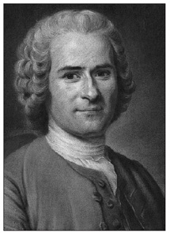
Mustafa Kemal’in ulusal egemenlik anlayışının geri planında
Jean-Jacques Rousseau’nun Mukavele-i İctimaiyye yahud Hukuk-ı
Siyasiyye Kavaid-i Esasiyyesi bugünkü dille “Toplumsal Sözleşme
ya da Siyasal Hukukun Temel İlkeleri” başlıklı kitabı vardı.
Eğer böyle ise, yani her yerde, insanın insana karşı bir borcu varsa, bütün borçlar gibi bunun de ödenmesi gerekirdi. Toplum böylece alacaklı ve borçlulardan oluşuyordu. Borçları ödeyecek olanlar insanlar arasındaki doğal ve toplumsal bağdan yararlanarak o güne kadar servet edinmiş kişilerdi. Gelmiş geçmiş, adı sanı bilinmeyen, topluma katkıda bulunmuş binlerce insan olmasaydı bu kişisel servetler oluşamazdı. Servet sahibi insanlar geçmişten ve güncel ilişkilerinden kaynaklanan borçlarını doğal ve toplumsal ilişkiler sürecinde zarar görenlere ödemeliydiler. Gerçi, bu alacaklıların şahsen bilinmeleri olanaksızdı; ancak bunların devlet ya da birçok toplumsal yardım kurumu gibi temsilcileri vardı. Borçlar devlete vergi, özellikle artan oranlı vergi olarak ödenebilirdi; aynı zamanda bu tür dengeleri kuracak olan yardım kurumlarına ya da sivil toplum kuruluşlarına verilebilirdi. Mustafa Kemal’in Afet Hanım’a yazdırdığı bu satırların esin kaynağı Charles Gide’ti. Bu söylemden, Mustafa Kemal’e göre, geçmişte ve halen insanların dünya nimetlerinden aynı oranda yararlanamadıkları anlaşılıyordu. Dünyadaki eşitsizlikleri gidermek gerekiyordu. Eşitsizliği gidermek için ise bir kısım insandan diğer bir kısım insan için adeta tazminat isteniyordu. O gün için dünya nimetlerinden farklı yararlanma düzeylerinin başlıca nedeni insanların değişik vasıflar ve yetenekler yüzünden birbirlerine benzememeleriydi.
Peki solidarizm ya da bağlılık kuramı uygulamada nasıl tezahür edecekti? Burada, ilginçtir, Mustafa Kemal devlet sosyalistliğinden söz ediyordu. Devlet sosyalistliği aslında Sovyetler’deki kolektivist anlayıştan epey farklı bir sistemdi. Bunu gecikmiş ülkelere özgü devletçilik olarak algılamak gerekiyordu. Daha 1921 yılının başlarında Hâkimiyet-i Milliyye gazetesinde İktisat Vekili Celâl Bayar’la yapılan bir söyleşide, Bayar, devlet sosyalizmine karşı olanların, bireyciliğin güçlü, sermaye birikimini gerçekleştirmiş ülke insanları olduğunu kaydediyor, Tanzimat’tan beri eşit olmayan şartlar altında Avrupa sermayesinin Osmanlı topraklarına girmesinin ve ülke kaynaklarına hâkim olmasının sakıncalarını ve sonuçlarını sıralıyordu. Bayar, devlet sosyalizminin yararlarını birçok örnekle göstermenin mümkün olduğunu, Almanya’da devlet sosyalizmi uygulanarak önemli ölçüde yol kat edildiğini söylüyordu. Tabii burada kastedilen Bismarck sonrası Almanya’da uygulanan “ictimai iktisat”tı.
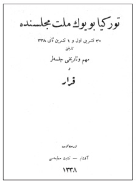
Türkiye Büyük Millet Meclisi’nde 30 Teşrin-i evvel ve 1 Teşrin-i sani
Tarihli Mühim ve Tarihi Celseler ve Karar, Dersaadet:
Akşam-Teşebbüs Matbaası, 1338.
Mustafa Kemal, devlet sosyalistliğinden söz ederken “sosyal devlet”i kastediyordu. Çıkarılacak yasalarla dayanışmacı bir toplum anlayışı kurgulanabilirdi. “İş Kanunu, şehirlerin ve atölyelerin sağlık kurumu kanunu, sarî hastalıklara karşı korunma kanunu, amelenin ihtiyarlığa ve kazalara karşı sigortası, hasta ve ihtiyar yoksullara mecburi yardım, çiftçi sendikaları, yardım cemiyetleri kurulması, ucuz evler yapılması, mektep çocukları için mekteplerde bakkallar, bütün bu gibi cemiyetlere devlet bütçesinden yardım ve buna benzer hususları temin için kanunlar” Mustafa Kemal’in solidarizmden ya da bağlılıktan anladığı somut uygulama örnekleriydi.
Ancak, Mustafa Kemal’e göre, dayanışmacılık fikri her yerde teveccüh görmemiş, birçok kişinin eleştirisine uğramıştı. Özellikle solidarizm sonucu bireyin sorumluluk duygusunun zayıfladığını ya da yok olduğunu iddia edenler vardı. İnsan, böylece aczini, kusurunu, ayıbını toplumun üstüne yıkabilir ve bireysel sorumluluktan kaçabilirdi. Ahlak kanununun temeli olan bireysel sorumluluk bu şekilde dumura uğrayabilirdi. Buna karşılık solidarizmin ahlaki değerlerini savunanlar da vardı. Başkasına olan bir iyilik insanın kendisine de iyilikti; başkasına olan kötülük kendisine de kötülüktü. Böylece iyilik yapmak ve kötülükten kaçınmak gerekirdi. Yapılan iş çevrede sevinç ya da acı olarak yankı uyandırırdı; bu durum insana vicdani görevler yüklerdi. Son olarak dayanışma insanı hoşgörülü kılardı. Çünkü başkasının kusuru bizim de istemeyerek çoğu kez suçlu olduğumuzu gösterirdi. Kısaca, dayanışma “herkes kendi için” yerine “herkes herkes için” düsturunu koyuyordu. Bu düşünce tarzı toplumsaldı; “milli”ydi ve insaniydi. Mustafa Kemal’in sosyal devlete açılım sağlayan bu görüşleri aslında yukarıda kaydedilen Charles Gide ve Charles Rist’in ünlü eserinin “Tesanütçü Tezleri” başlığı taşıyan bölümünün bir tür özetiydi.
Charles Gide uzun yıllardır Türkiye’de iyi tanınan bir iktisatçıydı. Dört ciltlik iktisat kitabı, Mehmed Cavid’in İlm-i İktisad’ı ile birlikte, Osmanlı iktisat literatürünün temel başvuru kaynağıydı. Ancak, Cavid Bey’in Adam Smith’e ya da klasik iktisada yönelik görüşlerine karşın Charles Gide “üçüncü yol”dan yanaydı. Üçüncü Cumhuriyet Fransası’nın solidarist görüşleri onu “sol”a çekmişti. Cihan Harbi’yle birlikte tüm savaşan ülkelerde devletin ekonomide ağırlıklı bir biçimde yer alışı, Charles Gide’in görüşlerinin daha da önemsenmesine neden olmuştu. Zira, savaş yoksulluktu, sefaletti. Devlet bir şekilde milli gelirden eskisine oranla daha büyük bir pay almalı ve transfer harcamalarıyla yoksulluğa çözüm bulmalıydı. Nitekim böyle oldu; savaş öncesi GSMH’den aldığı pay %10’lar düzeyindeyken savaşla birlikte bu oran % 40’ın üzerine çıkmıştı. Bu nedenle Türkiye dahil olmak üzere, devletçiliğin filizlerini Cihan Harbi’nde aramak gerekirdi. Milli Mücadele yıllarından itibaren “devlet iktisadiyatı”, “devlet iktisatçılığı”, “devlet sosyalizmi”, “iktisadî devletçilik”, “devletçilik” gibi tanımlar Türkiye’de tartışılmaya başlanmıştı. Ankara devletçiliği 1929 Buhranı’nın sonucu uygulamaya sokmuşsa da, devletin ekonomideki konumu tüm dünyada olduğu gibi Cihan Harbi ile birlikte güçlenmişti.
Savaş sonrası, hatta Milli Mücadele yıllarında “milli iktisat”ın bir uzantısı olarak, ekonomi ile siyasetin bütünlüğü vurgulanacak, özellikle yabancı tahakkümü altına girmiş olan finans sektörü başta olmak üzere, kent hizmetleri, demiryolları, madencilik, dış ticaret ve benzeri alanlarda devletin söz sahibi olması ilkesi benimsenecekti. Tıpkı Lenin’in Savaş Komünizmi ertesi uygulamaya soktuğu Yeni Ekonomik Politika’da [NEP] olduğu gibi önemli olan “hâkim tepeleri” [commending hights] ele geçirmek tüm ekonomiyi denetim altında bulundurmaya yetecekti. Ancak yukarda sözü edilen devlet müdahaleciliğinin kolektivizm olarak algılanmaması gerekiyordu. Nitekim bu konuda Batı’ya bir güvence vermek amacıyla, Lozan görüşmeleri kesintiye uğradığı sırada İzmir’de İktisat Kongresi toplanmıştı. Lozan görüşmeleri kritik bir evreye girmişti. Batılı ülkeler Türkiye’nin Bolşevikleşmesinden çekiniyorlardı. İzmir İktisat Kongresi Batı’ya seslenerek bu tür bir olasılığın olmadığını kanıtlıyordu.
Gazi ve Fransız Devrimi
Mustafa Kemal’in Fransız Devrimi’ne ve Üçüncü Cumhuriyet Fransası’na duyduğu ilginin kaynağı büyük ölçüde tarih bilimiydi. Her Osmanlı subayı gibi Gazi’nin de okuduğu kitaplar arasında tarihin ayrı bir yeri vardı. Bu ilgi, daha doğrusu tutku, tüm yaşamı boyunca sürdü. Özellikle Ernest Lavisse’in külliyatı kütüphanesinde baş köşeyi işgal etti. Lavisse’in yönetiminde yayımlanan Histoire générale du IVe siècle à nos jours’un altı cildi, Histoire générale des peuples de l’antiquité à nos jours’u, yine aynı yazarın Vue générale de l’histoire politique de l’Europe’u Mustafa Kemal’in ne denli Üçüncü Cumhuriyet tarihçiliğine odaklandığının kanıtlarıydı. Keza Lavisse’in yakın mesai arkadaşı Charles Seignobos’un Histoire politique de l’Europe contemporaine. Évolution des partis et des formes politiques, 1814-1914 adlı kitabı, okurken en fazla işaretlediği kitaplardan biriydi.380
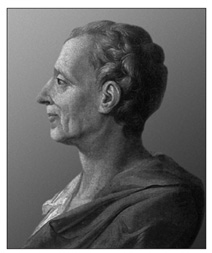
18. yüzyılda Fransız Devrimi üzerinde büyük etki yapan Montesquieu güçler
ayrımını, eski deyişle “tefrik-i kuva” ilkesini ortaya atan kişiydi.
Montesquieu’ye göre her devlette üç tür güç vardı: Yasama, yürütme ve yargı.
Mustafa Kemal’in Avrupa tarihinden ve özellikle Fransız Devrimi’nden öğrendiği temel unsur ulusal egemenlikti. Ona göre Türkiye’nin de çıkış yolu ulusal egemenlikti. Aydınlanma çağı düşünürlerinin görüşleri, Fransız Devrimi ve Üçüncü Cumhuriyet Fransası’nın fikir akımları tüm Jön Türk neslini olduğu gibi Mustafa Kemal’i de etkilemişti. Nitekim Milli Mücadele ve Cumhuriyet’in kuruluş evresinde geliştirdiği “hâkimiyet-i milliye” ya da ulusal egemenlik fikri son kertede Fransız Devrimi’nin esintilerini taşıyordu. “Milli hâkimiyet”e göre millet, kendisini meydana getiren bireylerden ayrı ve onların üstünde bir şahsiyete, bir iradeye sahipti. Hâkimiyet bu kolektif şahsa, milletin iradesine aitti. Böyle olunca millî hâkimiyet ilkesinde halk ya da millet iradesinin bireysel iradelerden bağımsız bir hukuksal ve siyasal hüviyeti, anlamı vardı. Milli hâkimiyet Fransız Devrimi’nde gündemi oluşturmuş ve bunun geri planında Jean-Jacques Rousseau’nun fikirleri yer almıştı.
Zürih Üniversitesi profesörlerinden Dr. Fritz Fleiner 1936 yılında Ankara’da Hukuk İlmini Yayma Kurumu’nda verdiği “Âmme hukukunda büyük harpten sonraki istihaleler” başlıklı konferansında, Jean-Jacques Rousseau’nun fikirlerinin temelinde “halk hâkimiyeti” anlayışının yattığını, demokratik fikir ve inançların Jean-Jacques Rousseau’nun 1762 yılında yayımladığı Sosyal Mukavele veya Siyasî Hukukun Prensibi başlıklı kitabıyla gündeme geldiğini belirtiyordu. 18. yüzyıl sonunda Avrupa ve Amerika’da bu fikirler kitlelerce benimsenmişti. Fritz Fleiner’e göre, Cihan Harbi ertesi ortaya çıkan anayasalarda, bu meyanda 1924 tarihli “Türkiye Esas Teşkilatı Kanunu”nda bütün güç ve yetkilerin milletten geldiği esası benimsenmişti.381
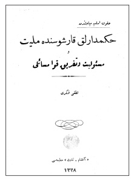
Kuvvetler birliği anlayışına en güçlü muhalefet Lutfi Fikri’den
gelmişti: Lutfi Fikri, Hukuk-ı Esasiyye Mübahisinden -
Hükümdarlık Karşısında Milliyet, Mes’uliyyet ve Tefrik-i Kuva
Mesâili, Akşam - Teşebbüs Matbaası, 1338.
Mustafa Kemal’in de ulusal egemenlik anlayışının geri planında Jean-Jacques Rousseau’nun Mukavele-i İctimaiyye yahud Hukuk-ı Siyasiyye Kavaid-i Esasiyyesi bugünkü dille “Toplumsal Sözleşme ya da Siyasal Hukukun Temel İlkeleri” başlıklı kitabı vardı. Bu kitabı 1913 baskısı Osmanlıca çevirisinden okumuştu.382 “Hakikatte efendiler, tabiatta efendiler, âlemde efendiler taksim-i kuvva yoktur. Yeni irade-i milliye ile ifade ettiğimiz kuvvette taksim-i kuvva yoktur” sözleri onun Toplumsal Sözleşme’ye ne denli sadık kaldığının kanıtıydı. Mustafa Kemal Rousseau’nun Mukavele-i İctimaiyye’sini dikkatli okuyarak şerhlemişti. “Egemenlik gücü basit ve tektir. Bu gücü bölmek yok etmektir [Kuvve-i hâkimiyet basit ve vahiddir. Bu kuvveti taksim etmek imha etmektir]” satırının yanına “mühimdir” notunu düşmüştü. “Egemenlik belli bir nedenle bırakılamayacağı gibi yine aynı nedene dayanarak vekâleten yürütülemez. Egemenlik kamunun iradesinde içkindir. İrade ise temsil edilemez. İrade ya kendisinin aynıdır ya da başkadır. İkisinin ortası olamaz. [Hâkimiyet ne esbaba mebni terk ve ferağ olunamaz; yine o esbâba mebni vekâleten icra edilemez. Hâkimiyet umumun iradesinde mündemicdir. İrade, ise temsil edilemez. İrade ya kendisinin aynıdır veya gayrıdır. İkisinin ortası olamaz.]” satırlarının yanına ise “kıymetli” diye yazmıştı. “Egemenlik gücü bırakılıp vazgeçilemediği gibi değiştirilemez de. Egemenlik gücünü sınırlamak bunu yok etmek demektir. [Kuvve-i hâkimiyet terk ve ferağ olunamadığı gibi tadil de edilemez. Kuvve-i hâkimiyeti tahdid etmek bunu mahvetmek demektir]” altını çizdiği bir başka satırdı.
Rousseau ve Güçler Birliği383
Fransız Devrimi monarşinin elinde olan mutlak hâkimiyetin sahibini değiştirmiş ve kral yerine milleti ikame etmişti. Bir diğer deyişle, taç kralın başından alınarak bir manevi şahıs telakki edilen milletin başına konulmuştu. Millî hâkimiyet ilkesinin Fransız mevzuatına girmesine neden olan Rousseau’nun fikirleri, Fransız devrim mevzuatının etkisiyle Kıta Avrupası’nın birçok ülkesine ulaşmış, bu arada Türkiye’de 1924 Anayasası’nın yazımında da etkin olmuştu.
Devletin doğuşunu ve yaşayışını hukuki, meşru esaslara bağlamak isteyen Rousseau doğal olarak bu esaslara aykırı mutlakıyetçi toplumsal sözleşme yandaşlarına karşı tavır almıştı. Milli hâkimiyet görüşü, millet denen topluluğun bağımsız bir toplumsal gerçek olduğu kadar bağımsız bir hukuksal ve siyasal gerçek olduğu fikrine, her iki gerçek arasında tam bir uyum bulunduğu hipotezine dayanıyor, milli camianın formel hukuksal ve siyasal realitesine gerçek sosyolojik yapısından daha önemli bir yer veriyordu. Rousseau için “millet” her şeyden önce hukuksal bir olguydu. Milletin doğal, sosyolojik varlığını inkâr etmemekte, hatta kan bağlılığını bile milleti kuran unsurlar arasında görmekteydi. Fakat ona göre millet daha ziyade üstün kavrayıcı, temel bir gerçek olarak rasyonel, iradi bir hukuk olgusuydu. Aklın, serbest bireysel iradenin eseriydi.
Millet, bir hukuksal olgu olarak, haklarda menfaatlerin uzlaşmasına olanak sağlamaya, milli topluluğa dahil her bireyin şahsını ve malını ortak güçle savunmaya ve korumaya muktedir meşru ve güvenli bir hukuk düzenine tabi olan ve eşit bireylerden oluşan bir topluluktu. Böyle bir topluluk ise bir şahsın ya da bir zümrenin güç ve tahakkümü ile değil, bireylerin serbest rıza ve katılımlarıyla kurulabilir ve sürdürülebilirdi. Güç ve tahakküm baskısı altında sevk ve idare olunan insanlar, sayıları ne olursa olsun bir millet değil, ancak bir esir sürüsüydü. Bunlar bir insan yığını oluştururlarsa da bir toplum sayılamazlardı. Zira bu tür insan kümelerinde ne siyasal bir birlik ne de kamu çıkarı söz konusu olabilirdi.
Rousseau’ya göre toplumsal sözleşmeyle kurulan gerçek toplumun, yani milletin bireylerden bağımsız bir hukuksal ve siyasal gerçeklik kazanmasının başlıca üç nedeni vardı. İlk neden, toplumsal sözleşmeyle kurulan ulusal camianın bireylerin serbest iradeleri sonucu oluşmasıydı. İkinci neden, bireylerin toplumsal sözleşmeyle sağlanan meşru ve güvenli bir hukuksal düzende birleşmeleriydi. Üçüncüsü ise, bu birleşmeden bireylerden bağımsız kolektif bir varlığın ortaya çıkışıydı. Rousseau için özel bir anlam taşıyan “kamu şahsı”, “genel irade ve “hâkimiyet” kavramları yukarıda belirtilen unsurların bireşimi sonucuydu.
Toplumsal sözleşmenin en temel hükmü siyasal topluma giren her bireyin kendisini bütün haklarıyla, bütün benliğiyle cemiyete terk etmesiydi. İşte bu hüküm Rousseau’ya göre, bireyler arasında mutlak hukuksal eşitliği, tam güveni ve sıkı bağlılığı olanaklı kılıyordu; kolektif nitelikte bir varlığın doğmasını sağlıyordu. Siyasal cemiyet ya da millet bir şahıs olunca kendisine özgü bir iradeye sahip olması gerekiyordu. Rousseau’nun “genel irade” adını verdiği ve Mustafa Kemal’de “milli irade”ye dönüşen bu güç odağı bütün vatandaşların iradelerinin toplamı olmayıp, onların bir senteziydi. Genel irade, “genel çıkar”ı hedefliyordu. Genel iradeye “genel” sıfatını kazandıran onun oluşumunda yer alan bireysel iradelerin adedi değil, bireysel iradeleri bir noktada birleştiren “genel çıkar”dı. Devletin güçlerini devletin kuruluşundan beklenen amaca yani genel çıkara uygun bir biçimde yönetmek ve yönlendirmek genel iradenin işiydi.
Hâkimiyete gelince bu Rousseau’ya göre, genel irade tarafından yönetilen ve yönlendirilen güç ya da iktidardı. Hâkimiyet bir şahsa ya da heyete devir veya ferağ edilemezdi. Çünkü umum irade devredilemezdi. Bu nedenle millet ancak kendi kendisini temsil ederdi. Aksi takdirde millet hukuksal şahsiyetini feda etmiş olurdu. Hâkimiyet devir ve ferağ edilemeyeceği gibi bölünemezdi de. Çünkü genel iradenin bölünmesi genelliğini yitirmesi sonucunu doğururdu ki, bu da olanaksızdı. Çünkü bireyler toplumsal sözleşmeyle kendilerini topluma terk etmiş olmakla genel iradeyi kendileri meydana getirdikleri için, tabi oldukları hâkimiyet kendi iradelerinin mahsulüydü. Ona itaat etmekle birey kendi kendine itaat ediyordu.
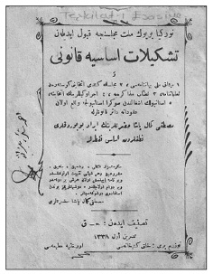
Türkiye Büyük Milet Meclisi’nce kabul edilen Teşkilat-ı Esasiyye Kanunu ve 1) Misak-ı Millî
Beyannamesi, 2) Meclis’in Kendi İntihâbını Gösteren Talimatname, 3) Nisâb-ı Müzakere’ye,
4) İcra Vekillerinin İntihabı’na, 5) İstanbul’un İşgalinden sonra İstanbul’ca vaki’ olan ukudâta dair
Kanunlarla Mustafa Kemal Paşa Hazretlerinin İrad Buyurdukları Nutuklardan Esas Noktalar.
Genel iradenin devir ve ferağ edilmemesinin ve bölünmezliğinin sonuçlarından biri “güçler birliği” idi. Çünkü devir ve ferağ edilemeyen ve bölünemeyen genel irade egemenliğinin tek sahibi milletti. Bu ise milli irade ve hâkimiyetin bütünlüğüne aykırı olan üç ayrı güç ya da iktidarın (yasama, yürütme, yargı) kabulüne olanak bırakmazdı. Yasama gücü bizzat milletteydi. Yürütme ve yargı güçleri ise milleti temsil eden, yani yasama gücünün birer aracı olan şahıs ya da heyetlerden ibaretti. Bunlar ayrı güç odakları sayılamazdı.
Osmanlı döneminde, ne 1876 tarihli Kanun-ı Esasi, ne de onun bazı maddelerini tadil eden 1909 tarihli İkinci Meşrutiyet Kanun-ı Esasisi, milli hâkimiyet prensibine açıkça yer vermişti. 1876 Kanun-ı Esasisi’nin yürürlüğe girmesi hakkında yayınlanmış olan 1908 tarihli Hatt-ı Hümayun’da “umumî işlerin meşrutiyet usulüne bağlanması”ndan söz ediliyordu. 31 Mart olayı ertesi hal’edilen II. Abdülhamid’in yerine geçen Mehmed Reşad yayınladığı Hatt-ı Hümayun’da “bütün milletin birleşmesi ve arzusu üzerine” tahta çıktığını söylüyordu. Aynı Hatt-ı Hümayun’da gerekli olan kanun ve nizamlardan henüz yapılmamış olanların Kanun-ı Esasi’ye ve milletin meşru, hakiki ihtiyaçlarına uygun olarak yapılacağını vaad ediyordu. II. Abdülhamid’in halli hakkındaki 24 Mayıs 1909 günlü kararnamede Âyan ve Mebusan’dan oluşan meclis için, Kanun-ı Esasi metninde “Meclis-i Umumî” tabiri kullanılmasına rağmen, “Meclis-i Millî” denilmekteydi.
1876 Kanun-ı Esasisi’nin tadili gerektiği hakkındaki 19 Ağustos 1909 günlü kararnamede “meşrutiyet idare” tabirinden ayrıca ve ilk kez olmak üzere “hâkimiyet-i milliye” tabiri kullanılmıştı. Tadil edilen Kanun-ı Esasi’nin 3. maddesi de “Padişah şer’i şerif ve Kanun-ı Esasi ahkâmına riayet, vatan ve milletine sadakat edeceğine yemin eder” demekle 1876 Kanun-ı Esasisi’nde bulunmayan ve zımnen milli hâkimiyeti ifade eden bir hüküm koymakta ve diğer hükümleri de padişahın hak ve salahiyetlerini eskisine göre sınırlamaktaydı. Tüm bu satırlarla milli hâkimiyet ilkesinin dolaylı bir biçimde kabul edilmiş olduğuna hükmedilebilirdi. Ancak Kanun-ı Esasi padişaha “meşrutiyet” ya da gerçek anlamda “anayasal” sistem ile bağdaştırılamayacak birtakım hak ve yetkiler tanıyan sarih hükümler içeriyordu. Kanun-ı Esasi’nin ruhu milli hâkimiyet prensibiyle telif edilebilecek bir mahiyette değildi. Bu gerekçeyle Milli Mücadele dönemine kadar gerçek anlamda “milli hâkimiyet”ten söz etmek olanaksızdı.
Milli hâkimiyet prensibinin sarih ve kati ifadesi 1924 Teşkilat-ı Esasiye Kanunu’nda yer alacaktı. Milli hâkimiyet ilkesi daha Milli Mücadele’nin başında saltanata ve dışa karşı güçlü bir silah olarak geliştirilmişti. Nitekim 25 Haziran 1919 günlü Amasya Tamimi’nin üçüncü maddesiyle 23 Temmuz 1919’da toplanan Erzurum Kongresi tarafından yayınlanan beyannamenin altıncı maddesi, millî hâkimiyet prensibini açıkça ifade eden esasları ve beyanları içeriyordu. Bu ilke 20 Ocak 1921 tarihli Teşkilat-ı Esasiye Kanunu’nun birinci maddesinde sarih ve hukuki bir nitelik kazanacaktı. Bu maddede “Hâkimiyet bilâ kayd ü şart milletindir. İdare usulü halkın mukadderatını bizzat ve bilfiil idare etmesi esasına müsteniddir” deniyordu. Bu ilke 20 Nisan 1924 tarihli Esas Teşkilat Kanunu’nun üçüncü maddesinde de “hâkimiyet bilâ kayd ü şart milletindir” şeklinde yer aldı. 1924 Anayasası’nın dördüncü maddesi ise “Türkiye Büyük Millet Meclisi milletin yegâne ve hakiki mümessili olup millet namına hâkimiyet hakkını istimal eder” demek suretiyle millî hâkimiyet prensibini klasik şekliyle ve en sarih biçimde kabul ediyordu.
Mustafa Kemal’in bizzat benimsediği ve 1921, ardından 1924 Anayasası ile uygulamaya koyduğu “milli egemenlik” anlayışı, Rousseau’nun Toplumsal Sözleşme adlı eserinden esinleniyordu. Rousseau’nun sözünü ettiği yasama gücü ise 1924 Anayasası’nın dördüncü maddesinde vurgulanan Türkiye Büyük Millet Meclisi idi.
Montesquieu ve Güçler Ayrımı
18. yüzyılda Fransız Devrimi üzerinde büyük etki yapan Montesquieu güçler ayrımını, eski deyişle “tefrik-i kuva” ilkesini ortaya atan kişiydi. Fransız Devrimi’nden önce, XIV. Louis mutlakıyeti bütün gücüyle kurmuş, Fransız tarihinde parlak bir devir yaratmıştı. Arkasından gelen Fransız kralları XV. ve XVI. Louis aynı başarıyı gösterememiş, Fransız halkı giderek yoğunlaşan baskı rejimine karşı tavır almaya başlamıştı. İşte Montesquieu böyle bir dönemde yaşamıştı. Fransa’dan çıkıp Avusturya, İtalya, Hollanda ve nihayet İngiltere’ye gitmiş, bu son ülkede iki yıl kadar oturmuştu. Montesquieu o dönem İngiliz yönetimini, mahkemelerini ve parlamentosunu incelemiş, gözlemlerinden kendi siyasal yönetim anlayışını oluşturmuştu.
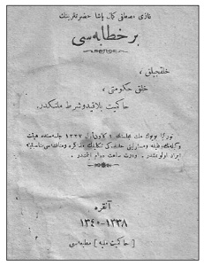
“Gazi Mustafa Kemal Paşa Hazretlerinin Bir Hitabesi – Halkçılık,
Halk Hükümeti, Hâkimiyet Bila kayd u şart milletindir - Türkiye
Büyük Millet Meclisi’nin 2 Kânun-ı evvel 1337 celsesinde Heyet-i
Vükela’nın Vazife ve Mesuliyeti Hakkındaki Teklifin Müzakere ve
Münakaşası Münasebetiyle İrad Olunmuştur.”
Montesquieu’ye göre her devlette üç tür güç vardı. Birincisi yasama gücü, ikincisi kamu hukukuyla ilgili işleri yürütme gücü, üçüncüsü ise medeni hukukla ilgili işleri yürütme gücü. Birinci güce dayanarak geçici ya da sürekli kanunlar yapılır, mevcut kanunlar değiştirilir ya da kaldırılırdı. İkinci güce dayanarak görülen işler savaş yapmak, barış yapmak, elçi göndermek, elçi kabul etmek, güvenliği sağlamak, dışarıdan gelecek saldırıları önlemek gibi hususlardı. Üçüncü güçle suçlar cezalandırılıyor, kişiler arasında çıkan uyuşmazlıklara çözüm getiriliyordu. Montesquieu’ye göre bu üç erk birbirinden ayrı olmalıydı. Bir kişide ya da bir kurumda bu güçlerin hepsi ya da ikisi birleşirse özgürlük tehlikeye düşerdi. Aslında Montesquieu’den önce güçler ayrımı ilkesini ilk öne süren İngiliz düşünürü Locke idi. Essay on Civil Government başlıklı eserinde üç gücü ayırt etmekte, yasama ile yürütme güçlerinin ayrı ellerde bulunması gerektiğini kaydetmekteydi. Montesquieu, kısmen İngiltere’deki gözlemlerinden, kısmen Locke’dan ilham alarak ün salan güçler ayrımı ilkesini ortaya atmıştı.
Mustafa Kemal güçler ayrımına hiçbir zaman sıcak bakmadı. Benimsediği güçler birliği anlayışı ise doğal olarak Milli Mücadele’nin gerektirdiği birlik anlayışının sonucuydu. Montesquieu’nün görüşleri ise Rousseau’nun siyasal iktidar anlayışının neredeyse taban tabana zıddıydı. Montesquieu’nün Kanunların Ruhu adlı eseri Ruhü’l Kavânin başlığı altında 1923 yılında Hüseyin Nâzım tarafından Türkçeye çevrilmişti.384Rousseau’nun yanı sıra Montesquieu’nün de Mustafa Kemal’in kütüphanesinde yer alması anlamlıydı. Parlamenter rejim anlayışı Montesquieu’nün görüşlerinde mündemiçti. Mustafa Kemal, Osmanlı’nın çöküşünün faturasını bir anlamda Meşrutiyet rejiminin getirdiği güçler ayrımına çıkarıyordu.
Cumhuriyet Türkiyesi, her ne kadar güçler birliği anlayışıyla yola çıktıysa da zamanla anayasa hukukunu güçler ayrımına doğru geliştirmişti. Hatta bunun 1924 Anayasası bünyesinde gerçekleştirildiğini savunan anayasa hukukçuları da vardı. Ancak ulus-devletin kuruluş aşamasında güçler birliği ve bu bağlamda Meclis Hükümeti anlayışı ağır basmıştı. Üniter bir yapı bir anlamda bu tür bir anlayışı zorunlu kılmıştı. Atatürk’ün “milli hâkimiyet” görüşü de buna dayanıyordu.
Mustafa Kemal’in siyasal hukuk bağlamında görüşlerinin oluşumunda Cumhuriyet’in ilk yıllarında yayımlanan iki önemli hukuk kitabının ayrı bir önemli vardı. Bunlar Atatürk’ün görüşlerinin kristalleşmesini sağlamanın ötesinde Cumhuriyet Türkiyesi’nin de hukuk anlayışını düzenleyen eserlerdi. Her iki kitabın da resmi yayın oluşu göz önünde bulundurulursa Atatürk’ün bunlardan haberdar olmaması mümkün değildi. Gerek siyasal hukuk düzeninin kuruluşunda, gerekse hukuk reformlarının gerçekleştirilmesinde bu iki kitabın etkisi büyüktü. Bunlardan ilkinin yazarı Léon Duguit idi. Ünlü anayasa kitabı, Hukuk-ı Esasiyye [Traité de droit constitutionnel] başlığı altında Toulonne Üniversitesi’nden doktora almış olan Menemenlizade Edhem tarafından Türkçeye çevrilmiş ve 1923-1924 yıllarında Türkiye Cumhuriyeti Maarif Vekâleti Neşriyatı olarak iki cilt olarak yayımlanmıştı.385Léon Duguit Üçüncü İkinci Meşrutiyet’ten itibaren Türkiye’de hukuk alanında kat edilen yolda önemli bir referans noktasını oluşturuyordu. Bu ciltlerin ilki “kaide-i hukukiye – devlet meselesi”, ikinci cildi ise “devlet – nazariye-i umumiye” alanlarını kapsıyordu. İlk cildi 428, ikinci cildi 489 sayfa idi. İlk kez bu denli kapsamlı bir anayasa hukuku kitabı Türkçeye çevriliyordu.
Léon Duguit (1859-1928) Üçüncü Cumhuriyet Fransası’nın ünlü bir kamu hukukçusuydu. Bordeaux Üniversitesi’nde Durkheim ve Maurice Hauriou ile birlikte bulunmuştu. “Bordeaux Okulu” diye de bilinen “Kamu Hizmeti Okulu”nun [l’Ecole de service public] ilk temsilcisiydi. Okulun diğer temsilcileri Gaston Jèze, Roger Bonnard, André de Laubadère ve Roger Latournerie idi. Toulouse Hukuk Fakültesi’nde Maurice Hauriou’nun öncülüğünde gündeme gelen “kamu gücü okulu”nun [l’Ecole de la puissance publique] muarızlarındandı.
Léon Duguit devlet ve hukuk ilişkisi üzerine kuramsal önerilerde bulunan ünlü bir hukukçuydu. Auguste Comte’un pozitivizminin etkisi altında kalmıştı. Durkheim’in sosyolojisini benimsemişti. Bu iki esin kaynağı Duguit’nin hukuk anlayışına özgün bir boyut katmıştı. Var olan hukuk anlayışlarını bu sayede eleştirmiş, devlet ve onun sınırını çizen “kamu hizmeti” kavramını geliştirmişti. Böylece devletin tüzel kişiliğinden kaynaklanan metafizik algılanışına karşı tavır koymuştu. Bu arada devletin gelişim sürecinde ekonominin önemini vurgulamış ve bu bağlamda “sol”a kayarak, devlet müdahaleciliğini savunmuştu. Cumhuriyet Türkiyesi’nde hukukun pozitivist açılımında Léon Duguit etkin bir düşünür oldu. Léon Duguit’nin ileriki yıllarda başka kitapları da Türkçeye kazandırılacaktı. Cumhuriyet’in laiklik anlayışında Üçüncü Fransız Cumhuriyeti’nin ayrı bir yeri vardı ve Türkiye’de hukuk devrimi büyük ölçüde Fransa’nın geçirmiş olduğu evrelerden etkilenerek gerçekleştirilmişti.
Cumhuriyet’in siyasal yapısının oluşumunda etkin olan ikinci önemli hukuk kitabı, Türkiye Büyük Millet Meclisi Divan Riyaseti kararıyla, İsmail Müştak Bey’in çevirisiyle yine iki cilt olarak 1927 yılında çıkan Mufassal Hukuk-ı Siyasiyye kitabıydı. İlk cildi 888, ikincisi 841 sayfa olan bu kitap, Fransız devlet kurgusunu son derece ayrıntılı bir biçimde ele alıyordu. Ansiklopedik bir başvuru kitabıydı. Yazarı Fransa Meclis-i Mebusan Kâtib-i Umumisi Eugène Pierre idi. Türkiye’de siyaset pratiğinin oluşmasında bu kitabın ayrı bir yeri vardı. Léon Duguit’nin kavramsal düzeydeki anayasa hukuku kitabı Eugène Pierre’in son derece ayrıntılı Fransız pratiğiyle birlikte ele alındığında Üçüncü Cumhuriyet Fransası’nın siyasal hukuk bağlamında Cumhuriyet Türkiyesi’ni ne denli etkilediği bariz bir şekilde görülüyordu.
Halkçılık Programı
Gazi Mustafa Kemal, 1927 yılında toplanan Cumhuriyet Halk Fırkası’nın Büyük Kongresi’nde okuduğu Nutuk’ta Meclis’te oluşan hiziplere değinirken şu satırlara yer veriyordu: “Bilmünasebe arz etmiştim ki, ilk Teşkilat-ı Esasiyye Kanunumuza menşe teşkil eden 13 Eylül 1920 tarihli bir programı, Meclis’e takdim etmiştim. Bu programın, Meclis’te 18 Eylül’de okunan kısmından başka, buna esas olmak üzere, Büyük Millet Meclisi’nin mahiyet-i esasiyyesini ve usul-i idare hakkındaki nokta-i nazarı tespit eden ve Meclis’in küşadını müteakip kıraat ve kabul olunan takririmi de bu kısımla beraber, Halkçılık programı unvanı altında tab’ı ve neşretmiştim.” Bu satırlar birçok araştırmacıyı 1920 güzünde yayımlanmış bir Halkçılık Programı’nın peşine düşmeye sevk etmişti. Bugüne kadar Milli Kütüphane ve TBMM Kütüphanesi dahil, Türkiye’nin herhangi bir kitaplığında ya da bireysel kütüphanede bu program bulunamadı. Böyle, basılmış bir program gerçekten var mıydı? Yoksa, Gazi, Nutuk’ta program adı altında farklı bir metine mi atıfta bulunuyordu?
İttihat ve Terakki II. Meşrutiyet yıllarında birçok kez program yayımlamıştı. Oysa [Cumhuriyet] Halk Fırkası’nın gelişkin bir programı ancak 1931 kurultayında kabul edilmişti. Fırka uzun süre olası programın kimi hususlarını da içeren nizamnameyle yönetildi. Ancak Cumhuriyet Halk Partisi tarihini yazan ya da Milli Mücadele’nin geçirdiği evrelerden söz eden hemen hemen her kitap Halkçılık Programı’na gönderme yaptı. Bu vesileyle farklı belgeler Halkçılık Programı olarak sunuldu. Atatürk’ün Halkçılık Programı başlıklı eserinde İsmail Arar, tüm çabalarına karşın bu programa ulaşamadığını belirtiyordu.386Ama yine de, kitabının önsözünde Atatürk’ün, 1920 yılı Eylül ayında, Halkçılık Programı adı altıda bir de broşür yayımladığını kaydediyordu. Kanıtı 1927 yılında söylenen Nutuk’tu.
Gazi’nin Nutuk’ta sözünü ettiği 13 Eylül günü Meclis’e verilen takrir Büyük Millet Meclisi Reisi sıfatıyla “İcra Vekilleri Heyeti adına Büyük Millet Meclisi Riyaseti’ne sunduğu bir kanun layihasıydı. Meclis’e “program” olarak takdim edilmişti. “Heyet-i Vekile’nin siyasî, ictimaî, idarî, askerî nokta-i nazarlarını telhis ve teşkilat-ı idariyye hakkındaki mukarrerâtını ihtiva eden program”dı. Ama sunulduğu aşamada “halkçılık programı” adı konulmamıştı. Takririn içeriğinde halkçılıkla ilgili tek bir satır ya da sözcük yoktu. Gazi, yıllar sonra bu belgeye Nutuk’ta “Halkçılık Programı” olarak atıfta bulunacaktı.
1920 sonbaharında Meclis’e “halkçılık” adı altında bir belge sunulmamıştı. Bu belgenin daha sonraları “Halkçılık Programı” olarak nitelenmesi, Meclis’te “Bolşevik” tehdidinin ortaya çıkmasıyla yakından bağlantılıydı. Tokat Mebusu Nâzım Bey’in 89 oya karşı 98 oy ile Meclis tarafından Dahiliye Nazırı seçilmesi, Mustafa Suphi’nin girişimleri, Halk Zümresi, Halk İştirakiyun Fırkası ve Yeşil Ordu, Gazi için kuzeyden gelebilecek bir tehdit olarak algılanıyordu. Nitekim bu tehditle ilgili Ali Fuat Cebesoy’a yazdığı bir mektupta ilk kez “halkçılık programı”ndan söz edecekti.
Nutuk’taki “Halkçılık Programı” tanımı araştırmacıları iki hususta yanıltıyordu. İlki 1927’de okunan Nutuk’ta söylenenler, önemli ölçüde belgeleri içerse de, büyük ölçüde Gazi Mustafa Kemal’in anımsadığı bir geçmişti. Bu evredeki her türlü gelişmeyi yayımlamasına karşın “Halkçılık Programı” Nutuk’un Vesikalar cildinde yer almıyordu. Her insan gibi Gazi Mustafa Kemal de, geçmişi hatırlarken yanılabilirdi. Nitekim, halkçılık söyleminin güç kazandığı 1927 Kongresi’nde, ileride CHF programının ana ilkelerinden biri olacak halkçılık ilkesinin gündeme geldiği bir dönemde, Gazi’nin Halk Fırkası’nın kuruluş evresindeki gelişmeleri “Halkçılık Programı” adı altında anımsamasını yadırgamamak gerekirdi.
Araştırmacıları yanıltan ikinci husus Gazi Mustafa Kemal’in, “Meclis’in küşadını müteakip kıraat ve kabul olunan takriri”ni, “Halkçılık programı unvanı” adı altında yayımladığı beyanıydı.387Meclis’in açılışını “müteakip” konuşma meselesini de muhtemelen Gazi yanlış anımsıyordu. Mustafa Kemal’in, CHF Büyük Kongresi’nde okuduğu Nutuk’u bir kenara bırakırsak, Meclis’te yaptığı en uzun konuşmaların ilki, “Meclis’in küşadını müteakip” 24 Nisan 1920 tarihinde yaptığı, daha çok Milli Mücadele’nin ilk evresindeki belgelerin takdimini kapsayan “Mütareke’den Meclis’in açılmasına kadar geçen zaman zarfında cereyan eden siyasî olaylar hakkında” başlıklı konuşmasıydı. Diğeri ise bundan bir buçuk yılı aşkın bir süre sonra, 1 Aralık 1921 tarihinde Meclis’te yaptığı ve iktidarın niteliğini belirleyen konuşmaydı.
Bu ikinci konuşma dönemi açısından son derece önemliydi; rejimin niteliğini ortaya koyuyordu. “Heyet-i Vekile’nin vazife ve mesuliyeti hakkındaki teklif müzakere ve münakaşası münasebetiyle” yapılan konuşma güçler birliği-güçler ayrılığı konusuna değiniyor, Teşkilat-ı Esasiyye’nin kurgusunu açıklıyor ve Tek Parti düzenini gerekçelendiriyordu. Önemine binaen Nutuk dışında, 1920’li yıllarda Gazi’nin risale olarak basılmış ender konuşmalarından biriydi.
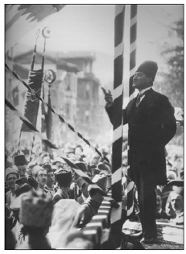
Mustafa Kemal, ülkenin kritik evreden geçtiği bir dönemde kamuoyunu
kendi yanına çekmeliydi. Fırka programının hazırlıkları sırasında halkla
temas ederek vatandaşların düşüncelerinden faydalanmayı uygun
gördü. Bu amaçla, 14 Ocak 1923’te Batı Anadolu’ya hareket etti.
Mustafa Kemal, Nutuk’taki “Halkçılık Programı”nı gündeme getirirken aslında “Meclis’in küşadını müteakip” sözleriyle bizleri 24 Nisan konuşmasına yönlendiriyordu. Bu konuşmasında herhangi bir şekilde halkçılıktan söz edilmiyordu. Nutuk’ta “Halkçılık Programı” vesilesiyle belirttiği, Meclis’te hizipleşmenin gündeme geldiği ve İkinci Grup ile Hüseyin Avni’nin ikide bir müdahale etme gereği duyduğu konuşma, 1 Aralık 1921 tarihli “Heyet-i Vekile’nin vazife ve mesuliyeti hakkındaki teklif müzakere ve münakaşası münasebetiyle” adlı konuşmasıydı. İşte bu konuşma “halkçılık” alt başlığı altında 1922 yılında yayımlanacaktı.
Bu konuşma Teşkilat-ı Esasiyye Kanunu’nun gerekçesi, “esbâb-ı mucibe”si olarak da yorumlanacaktı. 1922 Ekim ayında yayımlanan Türkiye Büyük Milet Meclisi’nce kabul edilen Teşkilat-ı Esasiyye Kanunu ve 1) Misak-ı Millî Beyannamesi, 2) Meclis’in Kendi İntihâbını Gösteren Talimatname, 3) Nisâb-ı Müzakere’ye, 4) İcra Vekillerinin İntihabı’na, 5) İstanbul’un İşgalinden sonra İstanbul’ca vaki’ olan ukudâta dair Kanunlarla Mustafa Kemal Paşa Hazretlerinin İrad Buyurdukları Nutuklardan Esas Noktalar başlığını taşıyan risalede 1 Aralık söylevinin anlamı şu satırlarla ifade ediliyordu: “Mustafa Kemal Paşa hazretleri heyet-i vekilenin vazife ve mesuliyeti hakkında teklifin müzakere ve münakaşası münasebetiyle bir nutuk irad buyurmuşlardır ki Teşkilat-ı Esasiyye Kanunu’nun esbâb-ı mucibesi mahiyetindedir.” Risale yukarıda belirtilen belgeleri içerdiği gibi, dört saat süren 1 Aralık söylevinden önem arz eden paragraflara yer veriyordu.
Konuşmanın özü kurulmakta olan siyasi rejimin temel prensiplerinden biri olan, eskiden “vahdet-i kuvvet” ya da “vahdet-i kuvâ” denilen güçler birliğiydi. Kanun-ı Esasi’nin güçler ayrılığı anlayışını getirdiğini, bu tür bir anayasal kurgunun imparatorluğu çökerttiğini vurgulayan Gazi, çözüm olarak Büyük Millet Meclisi hükümeti çatısı altında güçler birliğinin ülkeyi selamete çıkaracağını söylüyordu. Güçler birliği ilkesi İcra Vekilleri Kanunu ile uygulamaya sokulmuş, 1921 mevzuatında ve 1923 Cumhuriyet’in kuruluş kanununda yer aldıktan sonra, 1924 anayasasının 5, 6 ve 7’nci maddelerinde en sarih ifadesini bulmuştu.388Tüm tek parti döneminde ülke büyük ölçüde bu anlayışla yönetilecekti. Bu nedenle de Gazi Mustafa Kemal’in anılarında bu konuşmasının ayrı bir yeri oldu. Nutuk’ta da 13 Eylül konuşmasından söz ederken “halkçılık programı”nın yayını hususunda gönderme yaptığı aslında 1 Aralık 1921 tarihli konuşmasıydı.
Halkçılığın Gündeme Gelişi
Mustafa Kemal “halkçılık” ve “halk hükümeti” sözcüklerini ilk kez 12 Temmuz 1920 günü Konya Mebusu Refik Bey ve arkadaşlarının verdiği önerge üzerine yapmıştı. Bu konuşmasında “Zannederim bugünkü mevcudiyetimizin mahiyet-i asliyyesi, milletin temayülât-ı asliyyesini ispat etmiştir; o da halkçılıktır ve halk hükûmetidir. Hükûmetlerin halkın eline geçmesidir. (Alkışlar) Efendiler, biz memur sınıfı yaratmak için çalışmayalım ve mutlaka bir memur kadrosu dahilinde bulunanları bir yere koymakla dimağımızı bitap etmeyelim [yormayalım]. İdareyi halka teslim etmek için çalışalım (Alkışlar)” sözleriyle halkçılığı ilk kez gündeme getiriyordu.
Halkçılık, daha önceki bölümlerde ele alındığı gibi İttihatçıların ve özellikle Ziya Gökalp’in kullandığı bir terimdi. “Halka doğru” gidenler halkçıydı. Dayanışmacı bir anlayış da halkçılığı gerektiriyordu. Ancak, halkçılık sözcüğü 20’li yılların başında Bolşevizm tehdidi karşısında daha da önem kazanacaktı. Mustafa Kemal, Meclis’te bazı kişilerin “iğfal” edildiğini ve Bolşevizme yöneldiğini ima ederek Bolşevizm konusunda şunları söylüyordu: “Bizim nokta-i nazarımız, bizim prensiplerimiz cümlece malumdur ki, Bolşevik prensipleri değildir ve Bolşevik prensiplerini milletimize kabul ettirmek için de şimdiye kadar hiç düşünmedik ve teşebbüste bulunmadık. Bizim itikadımıza göre, milletimizin temin-i hayat ve tealisi kendi kabiliyet-i hazmiyyesiyle mütenasib olan nokta-i nazarlardır. Fakat esas itibariyle tetkik olunursa bizim nokta-i nazarımız –ki halkçılıktır– kuvvetin, kudretin, hâkimiyetin, idarenin doğrudan doğruya halka verilmesidir, halkın elinde bulundurulmasıdır. Yine şüphe yok ki, bu dünyanın en kuvvetli bir esası, bir prensibidir.”
Her iki konuşmada sözü geçen “halkçılık” ve “halk hükümeti” sözcükleri giderek siyasi söylemde güç kazandı. Fakat bir program olarak nitelenmesi Mustafa Kemal’in komünizm [komünist faaliyeti] ve Doğu cephesi üzerine Moskova’daki murahhas heyetinden gelen bir rapor üzerine 16 Eylül 1920’de Garp Cephesi Kumandanı Ali Fuat Paşa’ya yazdığı “zata mahsus” mektupta yer aldı. Bu mektubunda ülkede kurulmuş olan “komünizm teşkilatı gaye itibariyle tamamen bizim aleyhimizdedir” diyordu. Bu insanlar “ictimaî inkılab”dan yanaydılar. Ancak, Milli Mücadele ortamında bunun ne denli tehlike arz ettiğini göremiyorlardı. Bu kişiler ikna edilmeye çalışılmışsa da başarılı olunamamıştı. Bu nedenle Bolşevizm’i alt edecek “halkçılık programı” adı altında bir programa başvurulmuştu.
Bu satırlardan anlaşıldığına göre kuzeyden gelen Bolşevizm ve Komünizm rüzgârına karşı Mustafa Kemal 13 Eylül tarihli anayasa tasarısını Ali Fuat Paşa’ya “halkçılık programı” adı altında sunuyordu. Ancak, bu özel bir mektuptu. Gazi’nin takririni aleni olarak “Halkçılık Programı” olarak nitelendiren Teşkilat-ı Esasiyye görüşmeleri sırasında Encümen Mazbata Muharriri [raportör] İsmail Suphi Bey olmuştu. Tasarı Meclis’te epey tartışılmıştı. Trabzon Mebusu Ali Şükrü Bey, Meclis’te gündemde olan metnin iktidarın “mesleğini” yani siyasi çizgisini belirleyen bir “program” olduğunu, programı taklitçilikle, halkın ruhunu göz önüne almamakla ve dini konulara gereği gibi önem vermemekle eleştirecek; daha da ileriye giderek Bolşeviklik akımından esinlendiğini ima edecekti. İcra Vekilleri Heyeti adına konuşan Maliye Vekili Ferid Bey ve Dahiliye Vekili Refet Bey, metnin hükümetin siyasi programı mahiyetinde olduğunu belirtmişlerdi. Bu arada Menteşe Mebusu Dr. Tevfik Rüştü, Ankara Meclisi’nin siyasi kurgusuna gönderme yaparak, Meclis’in dışında bir yürütmenin olamayacağını, kararı Meclis’in vereceğini, “Meclis’in malı” olacak bir programın ancak Meclis bünyesinde hazırlanabileceğini vurguluyordu. Nitekim görüşmeler sonucu, İzmir Mebusu Yunus Nadi’nin başkanlığında, Burdur Milletvekili İsmail Suphi’nin mazbata muharrirliğinde Meclis’in her şubesinden üçer kişilik bir Encümen-i Mahsus kurulmuş ve bir rapor hazırlanmıştı. Bu raporun 18 Kasım 1920’de görüşülmesine başlandı ve 20 Ocak 1921 günü Teşkilat-ı Esasiyye Kanunu kabul edildi.
“Maksat ve Meslek”
Takrirde yer alan “maksat ve meslek” başlıklı ilk dört maddenin niteliği Encümen-i Mahsus Mazbata Muharriri İsmail Suphi tarafından yorumlanırken hükümet tarafından kendilerine “Halkçılık Programı” gönderildiğini kaydediyor, bunun iki kısma ayrılabileceğini, “maksat ve meslek” bölümünün bunun ilk kısmını oluşturduğunu, geri kalan kısmının “mevadd-ı esasiyye ve idariyye”ye ait olduğunu vurguluyordu. Tasarıda yer alan ilk dört madde aslında TBMM hükümetinin temel amaçlarını kapsıyordu. Encümenin kanunla ilgili düzenlemelerinde bu maddeler yer almayacaktı. Bu bölüm sonraları TBMM Beyannamesi diye yayımlanacaktı. Belgenin kendisi ileriki yıllarda “Halkçılık Beyannamesi” diye nitelendi. Oysa, başlangıçta böyle bir sıfatı yoktu.
“Halkçılık Programı” konusundaki kaygıları gene İsmail Suphi gündeme getiriyordu. Encümen bu dört maddeden yola çıkarak bir program yapmayı düşünmüştü. Ama, Meclis bir “fırka” değildi. Program fırkalara mahsustu. Meclis adına bir program yapmak doğru olmayacaktı. O nedenle, hükümetin “program” adı altında gönderdiği metin encümende kanun tasarısına dönüştürülmüş ve programın başında bulunan “mevadd-ı esasiyye”, yani “maksat ve meslek” bölümünün Büyük Millet Meclisi’nin amaçlarını göstereceği için bir beyanname olarak yayımlanmasına karar verilmişti. Bu beyannamede yer alan ilkeler Meclis için “mukaddes bir gaye” idi. Meclis’in bu “gaye”leri tüm dünyaya bağıra bağıra ilan etmesini kimse engelleyemezdi. Bunlar İsmail Suphi’nin sözleriydi. Benzer bir görüş Encümen-i Mahsus’un gerekçesinde de yer alıyordu. Ancak, bu metinde “hükûmetin verdiği program” deniyor, “halkçılık”tan söz edilmiyordu. İlk “maksat ve meslek” başlığı altındaki ilk dört maddenin birleştirilerek bir beyannameye dönüştürüldüğü belirtiliyordu.
Kimi günümüz kaynaklarında “Halkçılık Beyannamesi” diye geçen Büyük Millet Meclisi’nin Beyannamesi şu satırları içeriyordu:
Emperyalist devletlerin, devlet ve milletimizin hayatına açıkça kasd etmeleri neticesinde müdafaa-i meşrua için toplanan Türkiye Büyük Millet Meclisi, şimdiye kadar muhtelif vesilelerle sarahaten veya zımnen ilan ettiği maksat ve mesleğini bir kere daha bütün cihana arz için şu beyannameyi neşreylemeğe lüzum görmüştür.
Türkiye Büyük Milet Meclisi, millî hudutlar dahilinde, İslam ekseriyetinin, hayat ve istiklalini temin ve hilafet ve saltanat makamını tahlis ahdiyle teşekkül etmiştir. Binaenaleyh hayat ve istiklalini, yegâne ve mukaddes emel bildiği Türkiye halkını, emperyalizm ve kapitalizm tahakküm ve zulmünden kurtararak irade ve hâkimiyetinin sahibi kılmakla gayesine vâsıl olacağı kanaatindedir.
Türkiye Büyük Millet Meclisi, milletin hayat ve istiklaline suikast eden emperyalist ve kapitalist düşmanların tecavüzâtına karşı müdafaa ve bu maksada münafi hareket edenleri tedip azmiyle müesses bir orduya sahiptir. Emir ve kumanda salâhiyeti Büyük Millet Meclisi’nin şahsiyet-i maneviyyesindedir.
Türkiye Büyük Millet Meclisi, halkın öteden beri mâruz bulunduğu sefalet sebeplerini yeni vesait ve teşkilat ile kaldırarak yerine refah ve saadet ikame etmeği başlıca hedefi addeder. Binaenaleyh toprak, maarif, adliye, iktisat ve evkaf işlerinde ve diğer mesailde, ictimai uhuvvet ve teavünü hâkim kılarak, halkın ihtiyacâtına göre teceddüdât ve tesirâtı vücuda getirmeğe çalışacaktır. Bunun için de siyasî ve ictimaî umdelerini milletin ruhundan almak ve tatbikatta milletin temayülât ve ananâtınını gözetmek fikrindedir.
Binaenaleyh Türkiye Büyük Millet Meclisi memleketin idarî, iktisadî, ictimaî umum ihtiyacâtına müteallik ahkâmı peyderpey tetkik ve kanun şeklinde tatbik mevkiine vaz’eylemeğe başlamıştır.
Veminallahü’t-tevfik
21 Teşrin-i evvel 1336
1921 yılına gelindiğinde halkçılık artık iç siyasetin temel ilkesini oluşturuyordu. 1 Mart 1921 günü ikinci toplanma yılını açarken Mustafa Kemal, iç siyasette şiarın “halkçılık, yani milleti bizzat kendi mukadderatına hâkim kılmak” olduğunu söylüyor, bunun Teşkilat-ı Esasiyye Kanunu’nda tespit edildiğini kaydediyordu. Aynı yıl bu kez Doğu Cephesi Kumandanı Kâzım Karabekir Paşa’ya yazdığı 20 Temmuz tarihli mektupta Teşkilat-ı Esasiyye Kanunu’nun bütün idari mevzuatı ve hükümetin hukuki tavrını içeren ayrıntılı ve tam bir kanun olmadığını, ülkenin mülki ve idari teşkilatında zamanın icaplarının gerektirdiği halkçılık esasını ifade eden bir düstur olduğunu belirtiyordu.
1 Aralık 1921 Konuşması
Mustafa Kemal’in 1 Aralık 1921 günlü Meclis konuşmasını bütünüyle veren ve 1922 yılında yayımlanan bir risalede ise “halkçılık” bilfiil kapakta yer alıyordu: “Gazi Mustafa Kemal Paşa Hazretlerinin Bir Hitabesi - Halkçılık, Halk Hükümeti, Hâkimiyet Bila kayd u şart milletindir - Türkiye Büyük Millet Meclisi’nin 2 Kânun-ı evvel 1337 celsesinde Heyet-i Vükela’nın Vazife ve Mesuliyeti Hakkındaki Teklifin Müzakere ve Münakaşası Münasebetiyle İrad Olunmuştur. Ve Dört Saat Devam Etmiştir, Ankara 1340-1338 Hâkimiyet-i Milliye Matbaası.” Bu risale büyük bir olasılıkla, Mustafa Kemal’in Nutuk’ta belirttiği yayımlanmış “Halkçılık Programı”ydı. Kapağında “halkçılık” sözcüğü bilfiil yer alıyordu; ancak bir “program”ı içermiyordu.
Risale yukarıda da belirtildiği gibi çok önemliydi; zira kurulmakta olan rejimin niteliğini açık bir biçimde ortaya koyuyordu. Türkiye için Meclis hükümetinin neden gerekli olduğu bu metinde ayrıntılarıyla ifade ediliyor, Teşkilat-ı Esasiyye Kanunu’nda yer alan maddelere açıklık kazandırılıyordu. Mustafa Kemal konuşmasında birkaç yerde “halk”tan söz ediyor, kurulmuş olan hükümetin “halk hükümeti” olduğunu vurguluyor, “halkçılık, nizam-ı ictimaîsini sâyine, hukukuna istinad ettirmek isteyen bir meslek-i ictimaîdir” diyordu. Mustafa Kemal’e göre, TBMM rejimi Batı demokrasilerinden farklıydı ve bu böyle olmalıydı. Zira, yeni kurulmakta olan rejim Milli Mücadele’nin bir ürünüydü. İlgili bölüm “Efendiler biz benzememekle ve benzetmemekle iftihar etmeliyiz! Çünkü biz bize benziyoruz efendiler!” sözleriyle sonlanıyordu.
Mustafa Kemal’in 1 Aralık 1921 tarihli konuşmasında şu satırlar yer alıyordu:
‘Bu hükûmet demokrat bir hükûmet midir, sosyalist bir hükûmet midir, yani şimdiye kadar okuduğumuz kitaplarda ismi zikredilen hükûmetlerden hangisidir?’ buyurdular! Efendim bizim hükûmetimiz demokratik bir hükûmet değildir, sosyalist bir hükûmet değildir. Ve hakikaten kitaplarda mevcut olan hükûmetlerin, mahiyet-i ilmiyyesi itibariyle, hiçbirine benzemeyen bir hükûmettir. Fakat hâkimiyet-i milliyyeyi, irade-i milliyyeyi yegâne tecelli ettiren bir hükûmettir. Bu mahiyette bir hükûmettir! İlmî, ictimaî noktasından bizim hükûmetimizi ifade etmek lazım gelirse ‘halk hükûmeti’ deriz. Teşkilat-ı Esasiyye Kanunumuzun birinciden dördüncüye kadar olan maddeleri hükûmetin ne olduğunu, kimin tarafından idare olunduğunu, idare eden heyetin kuvvet ve salâhiyetini tasrih etmiştir. Şekil ve sureti tespit olunmuştur. Fakat meslek-i ictimaî itibariyle dahi düşündüğümüz zaman, biz hayatını, istiklalini kurtarmak için çalışan erbâb-ı say’ız, zavallı bir halkız! Mahiyetimizi bilelim. Kurtulmak, yaşamak için çalışan ve çalışmaya mecbur olan bir halkız! Binaenaleyh her birimizin hakkı vardır; salâhiyeti vardır. Fakat çalışmak sayesinde bir hakkı iktisab ederiz. Yoksa arka üstü yatmak ve hayatını say’dan muarra geçirmek isteyen insanların bizim heyet-i ictimaiyyemiz içerisinde yeri yoktur; hakkı yoktur! (Alkışlar) O halde ifade ediniz Efendiler! Halkçılık, nizam-ı ictimaîsini say’ına, hukukuna istinad ettirmek isteyen bir meslek-i ictimaîdir.
Efendiler! Biz bu hakkımızı mahfuz bulundurmak, istiklalimizi emin bulundurabilmek için heyet-i umumiyyemizce, heyet-i milliyyemizce bizi mahvetmek isteyen emperyalizme karşı ve bizi yutmak isteyen kapitalizme karşı heyet-i milliyyece mücahedeyi caiz gören bir mesleği takip eden insanlarız. Binaenaleyh bu ve bu gibi teşvikatla ve izahâtla hükûmetimizin istinad ettiği esasın, ilm-i ictimaîye müstenid bir esas olduğunu bariz bir surette görürüz! Fakat ne yapalım ki demokrasiye benzemiyormuş, sosyalizme benzemiyormuş, hiçbir şeye benzemiyormuş! Efendiler biz benzememekle ve benzetmemekle iftihar etmeliyiz! Çünkü biz bize benziyoruz efendiler! (Alkışlar)
İlk Resmi Vesika
30 Ağustos 1922’de savaş artık kazanılmıştı. Ancak iç ve dış muhalefet devam ediyordu. Yeni bir devlet yapısı oluşturulmadığı, reformlara gidilmediği takdirde tüm kazanımlar yitirilebilirdi. Bunun için de Milli Mücadele’de olduğu gibi birliğe gerek vardı. Birlik ise ancak güçlü bir siyasal örgüt çatısı altında sağlanabilirdi. Bu düşüncenin sevkiyle Mustafa Kemal ve yakın çevresi Anadolu ve Rumeli Müdafaa-i Hukuk Cemiyeti’nin devamı olacak bir partiyle yollarına devam etmeyi uygun gördüler. Anadolu ve Rumeli Müdafaa-i Hukuk Cemiyeti’nin programı vatan topraklarının kurtuluşu ve milletin istiklali üzerine bina edilmişti. Bu hedeflere büyük ölçüde varılmıştı. Lozan’daki barış görüşmeleriyle bir süre sonra tüm dünya Türkiye’nin bağımsızlığını tanıyacaktı. Barış sonrası ülkeyi yeni hedeflere yönlendirecek yeni bir siyasal örgüt kurulmalıydı. Mustafa Kemal’e göre “Anadolu ve Rumeli” tabirine artık gerek yoktu. Çünkü Misak-ı Milli gerçekleşmişti. Türkiye bağımsızlığını tüm dünyaya ilan etmişti. Müdafaa-i Hukuk terimi de Milli Mücadele’ye özgüydü. “Müdafaa-i Hukuk” teriminin hedeflediği haklar elde edilmişti. O halde yeni bir isimle yeni bir parti kurmak ve yeni bir program tespit etmek gerekiyordu. İşte bu ihtiyaçla Halk Fırkası adıyla yeni bir parti kurulacaktı. Bu bir süreçti.
Mustafa Kemal’in 7 Eylül 1922 günü Ankara’da çıkan gazetelere verdiği beyanatı Anadolu Ajansı’nca tüm ülkeye duyuruluyordu. Ajansın haberi şu satırları içeriyordu: “Ankara’da münteşir Hâkimiyet-i Milliye, Yeni Gün ve Öğüt gazeteleri mümessilleri müştereken Gazi Mustafa Kemal Paşa Hazretleri’ni ziyaret ederek bade’s-sulh [barış sonrası] hangi esaslar dairesinde çalışacağını sormuşlardır. Müşarünileyh bu münasebetle âtideki beyanatta bulunmuştur.” Beyanat Halk Fırkası’nın kuruluşuyla ilgili ilk resmi vesikaydı ve dört bölümden oluşuyordu. İlk bölüm, milletin yakın geçmişiyle geleceği hakkında genel fikirleri içeriyordu. Millet istiklaline sahip olmuştu; barış günleri yakındı. Gelecekte, milleti tehdit edecek tehlikelere karşı hazırlanmak ve çalışmak bütün millet için borçtu. Ülkeye göz dikenlere yalnız cephede galip gelmek kâfi değildi. Siyaset, yönetim ve iktisat bakımından da güçlü olmak gerekirdi.
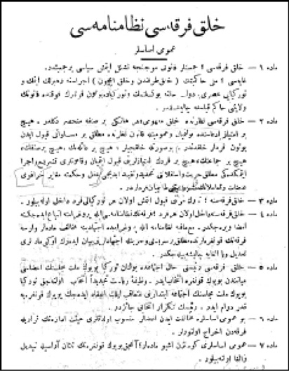
Halk Fırkası Nizamnamesi Umumî Esaslar [1. Taslak] :
Madde 1 - Halk Fırkası; Cemiyetler Kanunu mucibince teşekkül etmiş siyasî bir cemiyettir.
Gayesi; milli hâkimiyetin (halk tarafından ve halk için) icrasına rehberlik etmek ve
Türkiye’yi asrî bir devlet haline yükseltmek ve Türkiye’de bütün kuvvetlerin fevkinde
kanunun velayetini hâkim kılmağa çalışmaktır.
Madde 2 - Halk Fırkası nazarında halk mefhumu; herhangi bir sınıfa münhasır değildir. Hiçbir
imtiyaz iddiasında bulunmayan ve umumiyetle kanun nazarında mutlak bir müsavatı kabul
eden bütün ferdler halktandır. Bu suretle halkçılar; hiçbir ailenin, hiçbir sınıfın, hiçbir cemaatin,
hiçbir ferdin imtiyazlarını kabul etmeyen ve kanunları teşri’ ve icra etmekteki mutlak hürriyet
ve istiklalini tahdid ve takyid edici akıl ve hikmete mugayyir hurafuî ananat
ve teamülâtın meşruiyetini tanımayan ferdlerdir.
Madde 3 - Halk Fırkası’na; Türk harsını kabul etmiş olan her Türkiyeli ferd dahil olabilir.
Madde 4 - Halk Fırkası’na dahil olan her ferd; Fırka’nın nizamnamesi ile programına itba’
edeceğine imza verecektir. Mamafih nizamname ile programda ictihadına muhalif maddeler
varsa fırkanın kongrelerinde mutlak bir serbestî ve hürriyetle ictihadlarını beyan ederek o gibi
maddeleri tadil veya ilgaya çalışabilecektir.
Madde 5 - Halk Fırkası reisini hâl-i ictimada bulunan Türkiye Büyük Millet Meclisi’nin azası
meyanından büyük kongre intihab eder. Vazife-i riyaset tecdiden intihab olunacak Türkiye
Büyük Millet Meclisi’nin ictima’ ibtidarını müteaki ilk in’ikad edecek Büyük Kongreye
kadar devam eder. Reisin tekrar intihabı caizdir.
Madde 6 - Bu umumî esaslara muhalefet eden azalar mensub oldukları hey’et-i idarenin
kararıyla fırkadan ihrac olunurlar.
Madde 7 - Umumî esasları gösteren işbu maddeler; ancak Büyük Kongre’nin sülüsân
ârasıyla tebdil ve ilga olunabilir.
İkinci bölüm, ülkenin başlıca dertlerini sayıyordu. Tarım ve ticaret geriydi. Ülke harap, ahalisi ise fakirdi. Ulaşım olanakları çok sınırlıydı. Milli eğitim her yere ve herkese gereği gibi nüfuz edememişti. Toplumsal yaşamın en büyük düşmanı cehaletti. Bilgisizlik ve daha başka nedenler milleti fakir ve zayıf düşürmüştü ve düşürecekti. Üçüncü bölümde, bağımsızlık mücadelesinin tamamlanması için uzun vadeli bir çaba gerektiği belirtiliyordu. Ülke ihtiyaçlarına uygun ve bütün millet bireylerinin destekleyeceği bir programla yola çıkılması kaçınılmazdı. Dördüncü bölüm ise bu programın gerçekleştirilmesi amacıyla bir siyasi partinin kurulmasını şart koşuyordu. Gazi, Halk Fırkası unvanını alacak olan bu partinin programını hazırlamak için bütün millet bireylerini kendisine fikir vermeye davet ediyordu. Gazeteler Mustafa Kemal’in beyanatını “Mustafa Kemal ve İstikbalimiz”, “Büyük kumandan milletin istikbal-i ictimaî ve iktisadîsini nasıl düşünüyor?”, “Sulhtan sonra Türkiye” başlıklarıyla yayımlayacaklardı. Mustafa Kemal, 13 Ocak l923 günü İleri gazetesinde, Halk Fırkası’nın kuruluşuyla ilgili demecinde “Ben öyle bir fırka teşkilini tasavvur ediyorum ki, bu fırka milletin bütün sunufunun [sınıflarının] refah ve saadetini temine mâtuf bir programa mâlik olsun” diyordu.
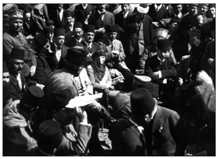
Mustafa Kemal’in Batı Anadolu’da yaptığı seyahat sırasında barıştan sonra kuracağı Halk Fırkası
hakkında halk ile yaptığı görüşmeler, basın aracılığıyla ülkenin dört bir yanına ulaştırılıyor,
ülke çapında kamuoyu oluşturuluyordu.
Mustafa Kemal, ülkenin kritik bir evreden geçtiğinin farkındaydı. Bu zor günlerde kamuoyunu kendi yanına çekmeliydi. Programın hazırlık evresinde halk ile temas ederek onun düşüncelerinden faydalanmayı uygun görecekti. Bu amaçla, 14 Ocak 1923’te Batı Anadolu’ya hareket etti. Eskişehir, İzmit, Bursa ve İzmir ile bu kentlerin çevresindeki kasabalara uğradı. Halkla uzun uzun söyleşti. Yaptığı konuşmalarda kuracağı fırkanın halkçılık anlayışını, toplumsal içeriğini ayrıntılı bir biçimde ele alıyordu. Görüşmeleri sırasında “millî hâkimiyet”in öneminden, Lozan Konferansı’ndan, ülkenin toplumsal ve iktisadi sorunlarından ve barış ertesi kuracağı Halk Fırkası’ndan bahsediyordu. Fırkayı tanımlarken şu sözleri sarf ediyordu: “Böyle bir fırkanın ruh-ı aslîsi, istiklal-i tam ve bilâ kayd ü şart hâkimiyet-i milliyyedir. Bu milletin mukadderâtını ellerine tevdi edeceğimiz insanlardan mürekkep meclis ve onun hükümetinin dikkatle takip edeceği dava hiçbir taraftan milletin istiklaline, hür hâkimiyetine göz dikilmemesinden ve bu istiklal ve hâkimiyetine dikilecek gözleri çıkarmaktan ibaret bulunacaktır.”
30 Ocak 1923 günü İzmir’de gazetecilerle yaptığı bir söyleşide milleti oluşturan unsurların birliğinden söz ediyor; birbirinden farklı menfaatler peşinde koşacak ve bu nedenle birbiriyle mücadele edecek muhtelif sınıflardan bahsedilemeyeceğini, var olan sınıfların yekdiğerine gerekli olduğunu vurguluyordu: “Bence bizim milletimiz yekdiğerinden çok farklı menâfi [menfaatler] takip edecek ve bu itibarla yekdiğerleriyle mücadele halinde bulunagelen muhtelif sunufa [sınıflara] malik değildir. Mevcut sınıflar yekdiğerinin lazım ve melzumu mahiyetindedir. Binaenaleyh, Halk Fırkası bilcümle sunufun hukukunu ve esbâb-ı terakki ve saadetini temine hasr-ı iştigal edebilir.” Bu satırlar tabii ki Ziya Gökalp’in solidarizmden esinlenen görüşleriyle tıpatıp örtüşüyordu. Solidarizm çoğulcu bir yapıyı dışlıyor, tüm toplumsal katmanları aynı potada eritiyordu. Ziya Gökalp, ulus inşa sürecinde bunu gerekli görmüş ve “sınıf yok, esnaf var” demişti. Yani birbirini destekleyen meslek zümrelerine gönderme yapmıştı.
Mustafa Kemal de, halkın tek bir çatı altında, tek bir parti yönetiminde hedeflere yürümesi gerektiğini vurguluyordu. 7 Şubat 1923 günü Balıkesir’de Paşa Camii minberinden okuduğu söylevde aynı görüşü daha ayrıntılı bir biçimde ele alıyor, Tek Parti’nin zorunluluğuna dikkati çekiyordu. Öncelikle Batı’daki çok partili sisteme değiniyor, bu ülkelerde siyasal partilerin çıkar çatışması olan “iktisadî maksatlar” üzerine kurulmuş olduğunu söylüyordu. Bunun nedeni bu ülkelerde değişik sınıfların varlığıydı. Her sınıf çıkarlarını korumak için ayrı ayrı örgütlenmişti. Bu son derece doğaldı. Oysa Türkiye’de durum çok farklıydı. II. Meşrutiyet yıllarında bu ülkenin siyasal partilerden canı çok yanmıştı. “Güya bizim memleketimizde de ayrı ayrı sınıflar varmış gibi teessüs eden fırkalar yüzünden şahit olduğumuz neticeler malumdur” diyordu.
Oysa Halk Fırkası dendiği zaman, buna “bir kısım değil, bütün millet dahil”di. Bu sözlerine açıklık kazandırmak için bu kez ülkede “halk”ın durumunu kuşbakışı gözden geçiriyordu: “Biliyorsunuz ki memleketimiz çiftçi memleketidir, o halde milletimizin azim ekseriyeti de çiftçidir. Bu böyle olunca buna karşı büyük arazi sahipleri hatıra gelir. Bizde büyük araziye kaç kişi maliktir? Bu arazinin miktarı nedir? Tetkik edilirse görülür ki memleketimizin vüs’atine nazaran hiç kimse büyük araziye mâlik değildir. Binaenaleyh bu arazi sahipleri de himaye edilecek insanlardır. Sonra sanat sahipleriyle kasabalarda ticaret eden küçük tüccarlar gelir. Bittabi bunların menfaatlerini, hâl ve âtilerini temin ve muhafaza etmek mecburiyetindeyiz. Çiftçilerin karşısında olduğunu farz ettiğimiz büyük arazi sahipleri gibi bu ticaret erbâbının karşısında da büyük sermaye sahipleri insanlar yoktur. Kaç milyonerimiz var? Hiç... Binaenaleyh biraz parası olanlara da düşman olacak değiliz. Bilakis memleketimizde birçok milyonerlerin, hatta milyarderlerin yetişmesine çalışacağız. Sonra amele gelir. Bugün memleketimizde fabrika, imalathane ve saire gibi müessesât çok mahduttur. Mevcut amelemizin miktarı yirmi bini geçmez. Halbuki memleketi yükseltmek için çok fabrikalara muhtacız; bunun için de amele lazımdır. Binaenaleyh tarlada çalışan çiftçilerden farklı olmayan ameleyi de himaye ve siyanet etmek icab eder. Bundan sonra da münevverler ve ulema denilen zevat gelir. Bu münevverler ve ulema kendi kendilerine toplanıp halka düşman olabilir mi? Bunlara terettüp eden [düşen] vazife halkın içine girerek onları irşat etmek, yükseltmek ve onlara terakki ve temeddünde yol göstermektir. İşte ben milletimizi böyle görüyorum. Binaenaleyh muhtelif meslekler erbâbının menfaatleri yekdiğeriyle imtizaç [uyum] halinde olduğundan onları sınıflara ayırmak imkânı yoktur ve umumi heyetiyle hepsi halktan ibarettir.” Kısaca Türkiye’de iktisadi menfaatler üzerine kurulmuş, ayrı sınıflar yoktu; Gazi bu nedenle kurulacak partinin bir “sınıf fırkası” olmayacağını, bütün ülke çıkarlarını gözetecek bir parti olacağını bildiriyordu.
Program ve Dokuz Umde
Mustafa Kemal’in Batı Anadolu’da yaptığı seyahat sırasında barıştan sonra kuracağı Halk Fırkası hakkında halk ile yaptığı görüşmeler, basın aracılığıyla ülkenin dört bir yanına ulaştırılmıştı.
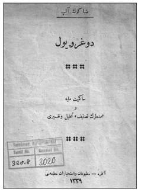
Mustafa Kemal Dokuz Umde’nin Halk Fırkası’nın temel prensiplerini kapsayan pratik bir
metin olduğunu kaydediyordu. Nitekim Ziya Gökalp bu belge üzerine Doğru Yol -
Hâkimiyet-i milliyye ve umdeleri tasnif ve tahlili ve tefsiri adlı kitapçığını yayımlayacaktı.
Parti nizamnamesinin hazırlanması için çalışmalar ise bilfiil Ankara’ya dönüşüyle birlikte başlamıştı. Bu arada, 1 Nisan 1923 günü Büyük Millet Meclisi seçimlere gitme kararı almıştı. Meclis’in dağılmasından bir hafta sonra, 8 Nisan günü, Mustafa Kemal, yeni seçim için Anadolu ve Rumeli Müdafaa-i Hukuk Cemiyeti adına “Dokuz Umde” adıyla tarihe geçen seçim programını yayımlıyordu. Bu belge epey temkinliydi. Hilafetin kaldırılması, Şer’iye Vekâleti’nin lağvı, medreseler ve tekkelerin yasaklanması, şapka giyilmesi gibi ileride gündeme gelecek birçok dönüşümü “Dokuz Umde” kapsamıyordu.
Aslında bu belge Halk Fırkası’nın ilk programı sayılabilirdi. Nitekim Dokuz Umde’nin bir parti program olduğunu Mustafa Kemal de onaylıyordu. Yayımlanan programın kısa bulunduğunu, bir siyasal parti için yetersiz olduğunu söyleyenlere verdiği cevapta “Dokuz Umde” adı altında bilinen programın itiraz edenlerin gördükleri ve bildikleri tarzda bir belge olmadığını vurguluyor, ancak fırkanın temel prensiplerini kapsayan pratik bir metin olduğunu kaydediyordu. Mustafa Kemal, uygulaması olanaksız fikirleri, kuramsal bir dizi ayrıntıyı yaldızlayarak bir kitap yazabileceklerini, ama öyle yapmadıklarını, milletin maddi manevi yenileşmesi ve gelişmesi yolunda, söz ve kuramlara değil, iş ve icraata öncelik verdiklerini söylüyordu.
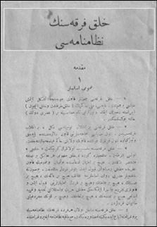
Halk Fırkası’nın Nizamnamesi [2. Taslak]
Umumî Esaslar
Madde 1 - Halk Fırkası Cemiyetler Kanunu mucibince teşekkül etmiş siyasi bir cemiyettir.
Gayesi: Milli hâkimiyetin (halk tarafından ve halk için) icrasına rehberlik etmek ve
Türkiye’yi tam manasıyla bir (asrî devlet) haline yükseltmektir.
Madde 2 - Halk Fırkası bir ihtilâl komitesi değil, bir inkılâb fırkasıdır. Bütün siyasî
mücahedelerini kanun dairesinde yapacak ve Türkiye’de bütün kuvvetlerin
fevkinde kanunun velayetini hâkim kılmağa çalışacaktır.
Madde 3 - Halk Fırkası’na mensup olanların gerçekten “halkçı” olması şarttır.
Halkçılara göre, halk mefhumu herhangi bir sınıfa münhasır değildir. Hiçbir
imtiyaz iddiasında bulunmayan ve umumiyetle kanun nazarında mutlak bir müsavatı
kabul eden bütün ferdler halktandır. Bu suretle halkçılar asrî devlet esaslarına muhalif
hiçbir ailenin, hiçbir sınıfın, hiçbir cemaatin ve hiçbir ferdin imtiyazlarını kabul etmeyen
ve kanunları teşri’ ve icra etmekteki mutlak hürriyet ve istiklalini tahdid ve
takyid edici hiçbir ananenin, hiçbir teamülün ve hiçbir kuvvetin
meşruiyetini tanımayan ferdlerdir.
Dokuz Umde’nin başında, ülkeyi “inhilal ve izmihlal felaketi”nden, bugünkü dille “bölünme ve yok olma felaketi”nden kurtarmak için milletten aldığı mutlak yetkiyle toplanan Türkiye Büyük Millet Meclisi’nin ulusal egemenliğe dayanan bir “halk devleti” kurduğu ve bu devletin üzerine aldığı “millî vazife”lerin önemli kısmını üç yıl içinde başararak 1 Nisan 1923 günü dönemini tamamlayarak seçimlere gitmeye oybirliğiyle karar verdiği yer alıyordu. Ardından gelecekteki çalışmaları ve kurulacak olan Halk Fırkası’nı resmen ilan ediyordu. Dokuz Umde’nin girizgâhı şu satırlarla sonlanıyordu: “Önümüzdeki devre, inşallah takrir-i müsâlemet [barış] müyesser olacağından iktisadî tekemmülâtını temin ve her nevi teşkilatımızı itmam ve ikmal ve bu suretle mülk-i milleti refaha nail etmek gaye olacaktır. Yeni devre-i mesaîde Meclis’in ekseriyetini bu gaye etrafından toplamak ve memleketi hâkimiyet-i milliyye dairesinde siyasî teşkilata mazhar etmek için bir Halk Fırkası teşekkül edecektir. Meclis’te elyevm müteşekkil Anadolu ve Rumeli Müdafaa-i Hukuk Grubu Halk Fırkası’na intikal edecektir. Mezkûr fırkanın halk hâkimiyeti, teceddüt ve inkişafât-ı maddiyye ve maneviyye esasâtına mübteni mufassal ve muntazam bir programı bilcümle azasının nazar-ı münakaşa ve tasvibine arz edilecektir. Buna intizaren grubumuz aşağıda umdelerle intihabâta iştirake karar vermiştir. Bu umdeler memleketin en müstacel ihtiyacını ve birçok erbâb-ı ihtisasın mütalaatı ve bilhassa İzmir’de bütün memleket mümessillerinden müteşekkil olarak in’ikad eden İktisat Kongresi mesaisi dahi nazar-ı dikkate alınarak tesbit edilmiştir.” Dokuz Umde, aslında Halk Fırkası’nın kuruluşu öncesinde ilan edilmiş bir programdı. Halk Fırkası’nın kuruluş evresinde üzerinde çalışılan nizamnamenin başında yer alan ilkeler bölümü de aslında programda yer alması gereken hususlara değiniyordu. Bu arada Halk Fırkası’nda nizamnamede yer alan kimi maddeler ve 1927 kongresinde yayımlanan “Umumî Riyasetin Beyannamesi” 1931 yılına kadar program işlevi gördü.
Kürt Sorunu ve Nizamname
Halkçılık ilkesi daha sonra altı okla ifadesini bulan CHF program ilkelerinin ilki ve en önemlisi oldu. Bu Halk Fırkası’nın kuruluş aşamasında, Gazi’nin söylevlerinde ve bizzat ilk nizamname çalışmalarında gözlemleniyordu. 1 Aralık 1921 tarihli konuşmasında Mustafa Kemal halkçılıktan resmen söz ediyordu. Meclis’teki hizip nedeniyle, kısa bir süre sonra parti çatısı altında çalışma kararı alınmasıyla, “halk”, “halkçı” sözcükleri sık kullanılır oldu. Nitekim son kertede partinin adının da Halk Fırkası olması doğaldı.
Halk Fırkası’nın doğuşu, birinci, bizzat TBMM içinde ve İstanbul’da güçlü bir muhalefetin oluştuğu bir dönemde, üstüne üstlük Lozan barış görüşmelerinin sürdürüldüğü aylara rastladı. Bu nedenle bu üç faktör göz ardı edilerek gelişmeleri anlamlandırmak olanaksızdır. Nitekim Kürt sorununun kaderi de bu dönemde belirlendi. Vatandaşlık kimliği, ya da Türkiyelilik ve Türklük 1923 yaz aylarında epey tartışıldı. Osmanlı’nın çoğulculuğu bir kenara bırakılıyor, türdeş bir toplum anlayışı İkinci Meclis’le birlikte gündeme geliyordu. Bu türdeşlik bir ölçüde Lozan’da gündeme gelen taleplerle de yakından ilgiliydi. Başta “azınlık” sorunu olmak üzere Anadolu’nun beşeri sermayesi görüşmelerin zaman zaman tıkanmasına neden olacaktı. Anadolu topraklarında yaşayan, etnik yönüyle Kürtleri de kapsayacak bir bütünlük, Düvel-i Muazzama’nın nifak tohumları karşısında Ankara tarafından tek seçenek olarak görüldü. Ankara, gayrimüslimler dışında yeni azınlıkların yaratılmasını ülke geleceği için sakıncalı görüyordu. 1923 yaz aylarında Halk Fırkası’nın kuruluş çalışmaları sırasında kurucu kadroların yoğun bir biçimde tartıştıkları konulardan biri Misak-ı Milli sonrası kurulmakta olan yeni devletin vatandaşlık kimliğiydi. Bir yandan Lozan sonuçlandırılıyor, öte yandan Halk Fırkası programı hazırlanıyordu. Nizamname bir anlamda Lozan’a endekslenmişti. Bu açıdan nizamnamenin kısa bir sürede geçirdiği dönüşüm ilginç bir nitelik taşıyordu.
Kurucu heyete sunulan 1923 nizamnamesinin ilk şeklinde, altıncı maddede “Bir ferdin halk fırkasına dahil olabilmesi için Türkiyeli olması ve aslen milli yurt haricinde bulunan Müslüman milletlerden birine mensup ise Türk milliyetini kabul etmesi şarttır” deniyordu. Böylece ilk metinde “Türkiyeli” sözcüğü yer almıştı. Tartışmalar ilerledikçe yeni bir metin hazırlandı; “Halk Fırkası Nizamnamesi Umumî Esaslar” önerisinde bu altıncı madde bu kez üçüncü madde olarak şu şekilde ifade edildi: “Halk Fırkası’na; Türk harsını kabul etmiş olan her Türkiyeli ferd dahil olabilir.” İlk taslaklarda kimlik, önce “Türkiyeli”, ardından “Türk harsını kabul etmiş olan Türkiyeli” diye tanımlanıyordu. Görüşmeler sonucu bu madde son şeklini aldı. Nizamnamenin yine üçüncü maddesi bundan böyle şöyleydi: “Halk Fırkası’na her Türk ve hariçten gelip Türk tabiyet ve harsını kabul eden her fert dahil olabilir.” Böylece ilk aşamada “Türkiyeli” olarak sunulan madde, özellikle Lozan’dan kaynaklanan kaygılarla, son kertede “Türk”e dönüşmüş oldu.
Ve nihayet Halk Fırkası nizamnamesinin taslak metninde en ilginç maddelerden biri umumi esasların 3. maddesiydi. Bu maddede “halkçılık” bir kez daha vurgulanıyordu. Halk Fırkası’na mensup olanlar gerçekten “halkçı” olmalıydı. Halkçılara göre halk mefhumu bir sınıfa özgü değildi. Herhangi bir imtiyaz iddiasında bulunmayan ve kanun önünde mutlak eşitliği kabul eden bütün fertler halktandı. Çağdaş devlette hiçbir ailenin, sınıfın, cemaatin ya da bireyin imtiyazları kabul edilemezdi. Yasama ve yürütmede bireyin mutlak özgürlüğünü ve bağımsızlığını sınırlayan ya da kayıt altına alan herhangi bir anane, teamül ya da güç meşru sayılamazdı.
Halk Fırkası’nın 1923’te Kabul Edilen Nizamnamesinde Halkçılık
TBMM’deki Halk Fırkası azaları tarafından bilmüzakere hey’et-i umumiyyesi 9 Eylül 339 tarihinde kabul olunmuştur.
Madde 2 - Halk Fırkası nazarında halk mefhumu, herhangi bir sınıfa münhasır değildir. Hiçbir imtiyaz iddiasında bulunmayan ve umumiyetle kanun nazarında mutlak bir müsavatı kabul eden bütün ferdler halktandır. Halkçılar, hiçbir ailenin, hiçbir sınıfın, hiçbir cemaatin, hiçbir ferdin imtiyazlarını kabul etmeyen ve kanunları vaz’etmekteki mutlak hürriyet ve istiklali tanıyan ferdlerdir.
Madde 3- Halk Fırkası’na her Türk ve hariçten gelip Türk tabiyet ve harsını kabul eden her ferd dahil olabilir.
Solidarizm ve Romantizm
Solidarist düşünce Meşrutiyet döneminin son yıllarında İttihatçı çevrelerce benimsenmiş, Tek-Parti Cumhuriyet döneminde değişik boyutlarıyla gündeme gelmişti. Halkçılık ana omurgayı oluşturuyordu. Ancak, devletçilik, meslekçilik, korporatizm, kooperatizm, köycülük bir ölçüde solidarist düşüncenin türevleriydi. Cumhuriyet Halk Partisi’nin “halkçılık umdesi” solidarizmden esinlenmişti. Solidarizmin “misak-ı millî” sınırları içinde ulusal devletin kuruluşunda önemli katkıları olmuştu. İki dünya savaşı arası Avrupası’nda güçlenen otoriter rejimler liberal devlete karşı kesin tavır almış, liberal devletle uluslaşmanın uyumlu olmayacağını ileri sürmüşlerdi. Cumhuriyet solidarizminin liberalizme karşı tutumunun oluşumunda Avrupa’da esen rüzgârların etkisi büyüktü. Tek-Parti yönetimi liberal devletin ulus birliğini bozduğunu, toplumda sınıflaşmaya yol açtığını, “milli devlet”in ise sınıflaşmayı reddettiğini, “milletçe kütleleşmek” fikrini önerdiğini, bu nedenle Türkiye Cumhuriyeti’nin çekiştirici, çarpıştırıcı liberal devlet tipini benimsemeyeceğini, ülke gerçekleriyle ancak sınıfsız “milli devlet” görüşünün bağdaşabileceğini savunmuştu. Bu görüşlere bağlı olarak Ceza Kanunu’nda değişikliklere gidilecek, Cemiyetler Kanunu’yla sınıf esasına dayanan cemiyetler yasaklanacak, İş Kanunu “yurttaşların sınıflaşarak parçalara ayrılmasını önleyici bir rejim kanunu” olarak değerlendirilecekti.
İkinci Dünya Savaşı ertesi dünya siyasal konjonktüründe yeni gelişmeler izlendi. Almanya, İtalya gibi totaliter ve otoriter rejimler savaşı yitirmişlerdi. Sonuç, bir anlamda, demokrasinin, liberal devletin zaferiydi. Tüm bu gelişmeler Türkiye’yi de etkilemekte gecikmedi. Solidarizm gündemden düştü. 1946 sonrası, çoğulcu, çok partili düzene geçişle birlikte CHP, Tek-Parti dönemini, partiyi yıpratmaksızın yorumlamaya çaba gösterdi. İsmail Hüsrev Tökin, Cumhuriyet Halk Partisinin Dünya ve Cemiyet Görüşü başlıklı kitabı bu açıdan önemliydi.389
İsmail Hüsrev Tökin’e göre, Tek-Parti’nin solidarist dünya görüşünü benimsemesinin gerekçeleri vardı. Milli Mücadele döneminde tüm ulusun beraberlik ve ortak bir bilinçle savaşa katılması gerekmekteydi. Ulusal bağımsızlık ancak organik bir birlik oluşturan tek bir ulusal yaşamın geliştirilmesiyle mümkündü. Savaş ertesi ulusal kalkınma aynı birlik duygusuyla yürütülmeliydi. Öte yandan Cumhuriyet’in kuruluşundan İkinci Dünya Savaşı’na kadar geçen sürede dünya giderek karanlık bir dönemi yaşamıştı. Birçok ülkenin savaş hazırlıkları, gittikçe artan saldırı, tecavüz tehlikesi ve nihayet tehditler, ulusal birliğin daha fazla vurgulanarak korunmasını gerektiriyordu. Ülkede dış tecavüzlere karşı direnmesini sağlayacak güç, ulusun askeri kudretinin yanı sıra ulusal birliğiydi. Bu nedenle Türk Devrimi’nin öncüleri “iç ve dış siyasi ve sosyal şartlar içinde yürüttükleri mücadelelerde nihayet sosyal ve milli hayatın, fertler ve müesseseleriyle beraber, birbirini tamamlayan tezatsız bir varlık olması lazım geldiği fikriyle tesanütçü (solidarist) bir dünya ve cemiyet görüşüne” varmışlardı.
Bu görüşün zamanla cumhuriyetçilik, inkılapçılık, laiklik, halkçılık, devletçilik, milliyetçilikten oluşan ve 1931 programında yer eden, daha sonra 1937’de anayasaya giren altı ilkenin ruhunu oluşturan bir “ana umde” olacağını vurgulayan İsmail Hüsrev Tökin, Türk bağımsızlığının bir zorunluluğu olarak doğan bu ana görüşün parti programında ve şeflerin sözleriyle yazılarında da görüldüğüne dikkat çekiyordu. Milli Şef İsmet İnönü, milli birlik ilkesini özellikle vurgulamıştı. Değişik tarihlerde çeşitli siyasi nedenlerle söylediği direktif nutuklarında milli birliğin, “Türk istiklal ve yükselişinde asli bir unsur” olduğunu daima ifade etmişti. 6 Kasım 1925’te Millet Meclisi’ndeki nutkunda “biz dahili politikayı, milli vahdetin tarsîsine [güçlendirilmesine] matuf mesai telakki ediyoruz” diyerek o zamanki siyasi anlaşmazlıklara karşı milli görüşü vurgulamıştı.
İsmet İnönü Türkiye’nin genel ve ekonomik siyasetinde bir dönüşümü ifade eden 1930 Sivas nutkunda şu sözleri sarf etmişti: “Bir millette milli vahdet ve mevcudiyetin çaresi olan tedbir, her mülâhaza ve her ihtiyaca takaddüm eder. Bu tedbirin bir gün bile tehiri dahi affolunamaz bir hatadır. Bu memleketi, tam bir uzuv halinde idare olunur, milli vahdeti temin olunmuş, milli müdafaası imkân altına alınmış bir vücut haline getirmek bizim için hayati bir meseledir.” 2 Mart 1939’da Üniversite gençliğine hitabesinde “milletler içinde en büyük kuvvet kendi evlatları arasındaki birlik kuvvetidir” diyordu. Keza 1939 Kasım’ında İkinci Dünya Savaşı’nın başında, dünyanın karşı karşıya kaldığı hengâmede bir ulusun en büyük ve güçlü dayanağını “milli birlik” olarak gösteriyordu.
Parti programında da bu “milli birlik” öğesi solidarist bağlamda gündeme gelmişti: “Türkiye Cumhuriyet Hükümeti halkını, ayrı ayrı sınıflardan mürekkep değil, fakat ferdi ve ictimai hayat için işbölümü itibariyle muhtelif iş ve hizmet sahiplerinden teşekkül etmiş bir camia telakki etmek esas prensiplerimizdendir. Çiftçiler, küçük sanayi erbabı, esnaf, işçi, serbest meslek erbabı, sanayi erbabı, tüccar ve memurlar Türk camiasını teşkil eden çalışma zümreleridir. Bunların her birinin çalışmaları diğerinin ve umumi camianın hayat ve saadeti için zaruridir. Partimizin bu prensiple hedef tuttuğu gaye, sınıf mücadelesi yerine ictimai intizam ve tesanüdü temin etmek ve birbirini nakzetmeyecek surette menfaatlerde ahenk tesis etmektir.” (Madde 5, fıkra C) Partinin 1943 yılı kurultayında kabul edilen yeni bir maddeyle bu görüş şu veciz ifadeyi almıştı: “Vatandaşlar arasında beraberlik bütün manevi kuvvetlerin ahenk içinde ve nifaksız olarak mahfuz bulundurulması her mülâhazanın üstünde ve icap ederse her tedbir ile korunacak mahiyettedir.” (Madde 32)
Savaştan gelen ve geçmişi kahramanlık menkıbeleriyle dolu bütün toplumsal hareketlerde bu romantik cevheri görmenin daima mümkün olduğunu söyleyen İsmail Hüsrev Tökin, milli birlik ilkesinin tüm inkılabın seyri boyunca, siyasal yaşamın düzenleyici ilkesi olduğunu belirtiyordu. İnkılabın ilk gelişme devirlerinde, parçalayıcı ve dağıtıcı hareketleri önleyebilmek, nihayet İkinci Dünya Savaşı tehlikeleri karşısında korunabilmek için siyasi hayatın tek bir partinin sevk ve idaresi altında bulunması gerekmişti. Cumhuriyet Halk Partisi bu safhada, ihtilafları kendi içinde tartışan ve çözen bir millet partisine dönüşmüştü. Ancak İkinci Dünya Savaşı sonunda bir yandan dünyanın aldığı yeni demokratik yönelim, öte yandan ülkede ulusal güvenliğin ve ulus bireylerinde siyasi bilincin yükselmesi ile tek parti düzeninden çok partili düzene geçiş başlamıştı. Cumhuriyet Halk Partisi, bu doğrultuda, çeşitli partilerin varlığını ve bunların karşılıklı ilişkilerini devlet güvenliği ve ulusal birlik bilinci çerçevesi içinde tanımıştı.
Nitekim 10 Mayıs 1946’da olağanüstü parti kurultayında Milli Şef bu konuda görüşünü şu sözlerle ifade etmişti: “Partimizin programı, sınıf esası üzerine cemiyet kurulmasını men etmiştir. Bu maddenin kaldırılmasını tetkik edeceksiniz. Biz kendi programında sınıf mücadelesini istemeyen ve sınıf menfaatleri arasında ahenk arayan esasta kalacağız. Vatandaşlardan sınıf menfaatleri üzerinde cemiyet ve parti kurmak isteyenlere kanun yolu ile mâni olmayacağız. Bizim kanun yolu ile men etmeye çalışacağımız cemiyet ve partiler, kökü dışarıda yani yabancı aleti olan cemiyet ve partiler ve onlardan mülhem olanlardır. Bunun gibi dini siyasete alet eden cemiyet ve partilere de kanun yolu ile karşı koymakta devam edeceğiz.”
İsmail Hüsrev Tökin’e göre, solidarizm dünya ve topluma bir birlik olarak bakıyordu: Bireyi, tek olanı, organik bir birliğin parçası olarak görüyordu. Diğer bir deyişle birey, toplumun bölünmez bir parçasıydı. Toplum ya da ulus, bireylerin, kurumların bir toplamı, mekanik birleşmesi sonucu ortaya çıkmış bir yekûnu değildi. Tüm bu unsurların organik bir bütünüydü. Asıl olan bireyin varlığı değil, bilakis bireylerin organik birliği olan ulusun varlığıydı. Birey varlığını ancak ulus varlığı içinde koruyabilirdi. Ulusun varlığı ise, ancak bireylerin sıkı birliği, dayanışmasıyla mümkündü. Solidarist zihniyetin CHP programında ve Anayasa’da halkçılık ilkesinde yansıdığını belirten İsmail Hüsrev Tökin, Tek-Parti dönemi solidarizminin inkılâbın başından beri ulus bireylerinin, milli birlik bilinciyle kendi iş sahalarında toplumsal dayanışma ve ahenkle çalışmalarını sağlayan demokratik bir camia halinde örgütlenme ve ilerlemelerine çalıştığını ileri sürüyordu.
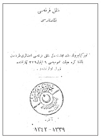
Halk Fırkası 1923 Nizamnamesi
Madde 1 - Halk Fırkası Cemiyetler Kanunu mucibince teşekkül etmiş siyasî bir
cemiyettir. Gayesi, millî hâkimiyetin halk tarafından ve halk için icrasına
rehberlik etmek ve Türkiye’yi asrî bir devlet haline yükseltmek ve Türkiye’de
bütün kuvvetlerin fevkinde kanunun velâyetini hâkim kılmaya çalışmaktır.
Türkiye’nin “sınıfsız bir toplum” olduğu savına gelince, İsmail Hüsrev Tökin, bunun dönemin hâkim romantik ruhunun bir ürünü olduğunu vurguluyordu. Tökin’e göre “Türkiye hiçbir zaman içtimai zümrelere, sınıflara ayrılmamış bir memleket olmamıştı.” Ekonomik yaşam geliştikçe “meslekler”, “sınıflar” beliriyordu. Bu yaşamın zorunlu bir yasasıydı. Parti programında yer alan tesanütçü görüş, hayatı inkâr anlamına gelmiyordu; aksine, toplumsal ayrılıklara, farklara rağmen ulusun bireyleri arasında manevi bir birlik, bir gönül bağı kurmayı amaçlıyordu. Solidarizmle, bölünmüşlüğün yerini “gönüller arasında köprü kuracak bir iman”, idealist bir hayat anlayışı alacaktı. Bu açıdan İsmail Hüsrev Tökin’e göre, Cumhuriyet Halk Partisi programına güçlü bir romantizm ruhu hâkimdi. Ulus-devlet inşa süreçlerinde bu kaçınılmaz bir olguydu.
* * *
Türkiye popülizmi değişik eksenlerde yaşadı. Çok partili döneme kadar popülizm ideolojik bir silahtı. Çok partili dönemde DP-AP evresinde siyasal boyutu ön plana çıktı. İthal ikameci iktisat politikalarıyla ekonomik yönü ağır bastı. Bu nedenle günümüzde popülizm sözcüğü eğilip bükülebilen, farklı anlamlar taşıyan muğlak bir kavrama dönüştü. Oysa her ülkede ortak paydaları olsa da, Türkiye’de popülizm kendine özgü bir dizi özellik taşıdı. Dış dünyadan esinlense de bu topraklarda somut sorunlara çözüm aradı.
Türkiye’de popülizm son zamanlarda günlük dilde olumsuzluk içerse de ilk evrelerinde pozitif değerlerle yüklü bir düşünce akımıydı. İttihat ve Terakki ve Cumhuriyet’in Tek-Parti döneminde ideolojik içerikliydi ve dönüştürücü bir işlevi vardı. Halkçılık, milliyetçilikle birlikte II. Meşrutiyet aydınının bulduğu çözümdü. İdeolojik içeriği olan bu tür popülizm Türkiye’de 1940’ların sonlarına kadar etkinliğini sürdürdü. 1948 İstanbul İktisat Kongresi tüm bu değerler açısından bir dönüm noktası oldu. O güne kadar büyük ölçüde kendi yağıyla kavrulmuş olan Türkiye, Marshall Planı ile dışa açılıyor, devletçi ekonomik politikalar bir kenara bırakılarak liberal bir çizgiye giriliyordu. İşte 1908-1948 dönemi Türkiye’de uluslaşma sürecinde kapitalizm ile ulusal yapının kimi kez örtüştüğü ve kimi kez ayrıştığı bir evreyi oluşturdu. Ancak birikim süreci, devlet ya da fert eliyle olsun, sürekli gündemde tutuldu. Popülizm ise haklardan çok görevlerle donatılmış bir bireyi hedefleyecek, Cumhuriyet yurttaşının inşasını üstlenecekti. Çok partili rejime geçişle birlikte demokrasi söylemi popülizmi başkalaştırdı. İdeolojik niteliği köreldi; siyasal boyutu ön plana çıktı. Latin Amerika’dakileri anımsatırcasına kitleleri coşturucu bir siyaset yöntemine dönüştü.
Türkiye’de ulus-devlet inşa sürecinin sancılı ortamında popülizm çoğu kez prim yaptı. İdeolojik bir silah olarak iktidarın elinden bırakmadığı sihirli bir değneğe dönüştü. Ancak yarım yüzyıla varan bu serüvende popülizm soldan sağa doğru kaykıldı. İkinci Dünya Savaşı arifesinde ve savaş yıllarında faşizan boyutlar içerdiği anlar oldu. Türkiye’nin bu tarihlerde Kıta Avrupası’ndan esinlenmemesi olanaksızdı. İki savaş arası [1919-1939] dünyada liberal demokrasilerin çöküş evresiydi. 1918-20 arası iki, 1920’lerde altı, 1930’larda dokuz ve Alman işgali altında diğer beş Avrupa ülkesinde yasama organları lağvedildi. Tüm iki dünya savaşı arası oldukça demokratik siyasal kurumların kesintisiz işlediği ülkeler, İngiltere, Finlandiya, İrlanda, İsveç ve İsviçre’ydi. Daha geniş bir dünya kapsamında, otoriter olmayan anayasal düzen Kanada, Kolombiya, Kosta Rika, ABD ve “Güney Amerika’nın İsviçresi” diye bilinen Uruguay’da varlığını sürdürdü.
Birinci Dünya Savaşı ile İkinci Dünya Savaşı sonları arasında dünyada siyasal hareketler liberal yörüngeden koparak sola ya da sağa kaykılmıştı. Büyük kısmı kolonilerden oluşan ve tanım gereği liberal olmayan dünyanın geri kalan kısmında ise, liberal sayılabilecek anayasalardan uzaklaşılmaktaydı. 1930’ların başında Japonya’da ılımlı liberal düzen yerini nasyonalist-militer rejime bıraktı. Tayland anayasal hükümet kurma doğrultusunda birkaç girişimde bulundu. Amerika ve Avrupa kıtaları bir kenara bırakılırsa dünyada Avustralya ve Yeni Zelanda dışında demokratik rejim yoktu. Diğer bir deyişle tüm dünyada liberalizm ricat halindeydi. Bu ricat Hitler’in iktidara gelişiyle daha da hızlandı. Tüm dünyada 1920’de 35 anayasal ve seçilmiş hükümet varken bu sayı 1938’de 17’ye düştü. 1944’te ise dünyadaki 64 ülkenin ancak 12’si demokrat ve anayasal düzene sahipti.
Bu gelişmeler nedeniyle ünlü tarihçi Eric Hobsbawm iki dünya savaşı arası dönemi “katastrof çağı” diye niteledi. Mazower için ise Avrupa “karanlık kıta”ydı. Diğer bir deyişle 1919-1939’u kapsayan yirmi yıllık evre, iki dünya savaşı dışlanırsa, gerek siyasal gerekse ekonomik açıdan 20. yüzyılın karanlık dönemini oluşturdu. Demokrasi giderek geriledi; yerini otoriter ve totaliter rejimlere bıraktı. İşte bu denli sorunlu bir ortamda Türkiye Cumhuriyeti kuruldu; yeni bir ulus-devlet doğdu. Bu sancılı evrede doğan ve Cumhuriyet Halk Partisi’nin altı okundan biri olan halkçılık bir tür ideolojik popülizmdi. 1950 sonrası gündeme gelen siyasal popülizmlerden özde farklıydı. Türdeş bir toplumu hedefleyen eşitlikçi bir anlayıştı.
378 Modris Eksteins, Rites of Spring: The Great War and the Birth of the Modern Age, Black Swan, New edition, 1990.
379 Atatürk’ün kitaplığında bu eserin Fransızcası bulunuyordu: Charles Gide & Charles Rist, Histoire des doctrines economiques depuis les physiocrates jusqu’a nos jours, 3. Edition, Paris Recueil Sirey, 1920.
380 Charles Seignobos, Histoire politique de l’Europe contemporaine. Evolution des partis et des formes politiques 1814-1886, Paris: Armand Colin et Cie., 1897.
381 Fritz Fleiner, Âmme Hukukunda Büyük Harpten Sonraki İstihaleler, Ankara, Hukuk İlmini Yayma Kurumu Konferanslar Serisi no: 9, 1936, s. 4.
“Âmme hukukundaki bu istihaleyi izah ederken müsaadenizle hareket noktası olarak halk hâkimiyeti prensibini alacağım. Bizim demokratik fikir ve inançlarımız Cenevre’nin büyük hemşerisi Jan Jak Ruso’nun doktrinine dayanır. Onun 1762’de neşrettiği Sosyal Mukavele veya Siyasî Hukukun Prensibi ismindeki kitabının koyduğu prensipler 18’inci asır sonunda Avrupa ve Amerika memleketlerine yayıldı ve Büyük Harp’ten sonra meydana gelen teşkilât-ı esasiye kanunları ve bu meyanda Türkiye Esas Teşkilâtı Kanunu bütün kuvvet ve salâhiyetlerin milletten geldiğini esas olarak aldılar. Ruso’nun fikirlerinden herhangi bir şekilde mülhem olmayan cumhuriyetçi bir esas teşkilât kanunu yoktur.”
382 Jean-Jacques Rousseau, Mukavele-i İctimaiyye yahud Hukuk-ı Siyasiyye Kavaid-i Esasiyyesi, mütercimi: (Ayın), İstanbul: Matbaa-i Hayriyye, 1329.
383 Jean Touchard, Histoire des idées politiques - Tome 2, Du XVIIIe siècle à nos jours, 2e édition, Paris: Presses Universitaires de France, 2005, s. 421-433; Philippe Nemo, Histoire des idées politiques aux Temps modernes et contemporains, Paris: Presses Universitaires de France, 2002, s. 801-840; Géraldine Muhlmann, Evelyne Pisier, François Châtelet, Olivier Duhamel, Histoire des idées politiques, 2e édition, Paris: Presses Universitaires de France, 2012, s. 127-142. Rousseau’nun güçler birliği anlayışına varan kurgusu Türkçede en kapsamlı şekilde Mehmet Ali Ağaoğulları’nın Ulus-Devlet ya da Halkın Egemenliği başlıklı kitabında yer aldı. [Ankara: İmge Kitabevi, 2006] Son derece akıcı bir üslupla egemenlik sorununa eğilen kitabın ikinci bölümünde Fransız Devrimi ele alınıyor. Konunun daha kısa bir versiyonu için bkz. Mehmed Ali Ağaoğulları, (editör), Sokrates’ten Jakobenlere Batı’da Siyasal Düşünceler, İstanbul: İletişim Yayınları, 2011, s. 569-596.
384 Montesquieu (Charles Louis de Secondat, baron de la Brede et de) Ruhü’l Kavânin, 2 cilt, mütercimi: Hüseyin Nâzım, İstanbul: Matbaa-i Amire, 1339.
385 Menemenlizade Edhem [Etem Menemencioğlu] ileriki yıllarda Leon Duguit’nin diğer önemli bir eserini de Türkçeye çevirmişti: Leon Duguit, Cemiyet, Hukuk ve Devlet Nazariyeleri, İstanbul: Maarif Matbaası, T.C. Maarif Vekilliği Siyasal Bilgiler Okulu Yayını, 1939. Leon Duguit’ye yer veren bir başka yazar Ali Fuat Gedik idi: Hukuk ve Sosyologlar, İstanbul: Cumhuriyet Matbaası, 1945, s. 124-136.
386 İsmail Arar, Atatürk’ün Halkçılık Programı, İstanbul: Baha Matbaası, 1963.
387 Mustafa Kemal İzmit Kasrı’nda 16-17 Ocak 1923 günü gazetecilerle yaptığı söyleşide halkçılık programıyla ilgili olarak şunları söylüyordu: “Biraz sonra bazı usuller, kanunlar ve kaideler mevzuubahs edenler oldu. Ve hatta bir program da hazırlamakta olduklarını işittim. [Burada söz konusu kişiler daha sonra İkinci Grubu kuracak olanlar-ZT] Bunun üzerine arz ettiğim proje esasâtına göre bir program yaptım. Hatta pek aceleye gelmişti. Halk programı namı altındaki bu projeyi bir gece tab’ettirdim. Ertesi günü ictimâ eden zevâta dağıttırdım.” Bu satırlardan anlaşılacağı gibi, “program” olarak hazırlanmış takrir, Meclis’in çalışma yöntemi gereği tab’ ediliyor ve mebuslara dağıtılıyor. Nutuk’ta ise tab’ etmenin yanı sıra “neşir”i gündeme getirerek yayınlamaktan, kamuoyuna yönelik bir girişimden söz etmiş oluyor. Anlaşılan, tab’ edilmiş, yani basılmış bir metin var; ancak bu Meclis içi kullanıma yönelik bir metin... Nutuk’ta bizleri yanıltan sözcük “neşrettim” olsa gerek.
388 Bu üç madde şu satırları içeriyor: Madde 5: Teşri salâhiyeti ve icra kudreti Büyük Millet Meclisi’nde tecelli ve temerküz eder; Madde 6: Meclis, teşriî salâhiyeti bizzat istimal eder; Madde 7: Meclis icra salâhiyetini, kendi tarafından müntahap Reisicumhur ve onun tayin edeceği bir İcra Vekilleri Heyeti marifetiyle istimal eder. Meclis, hükûmeti her vakit murakabe ve ıskat edebilir.
389 İsmail Hüsrev Tökin, Cumhuriyet Halk Partisinin Dünya ve Cemiyet Görüşü, Ankara, 1946.